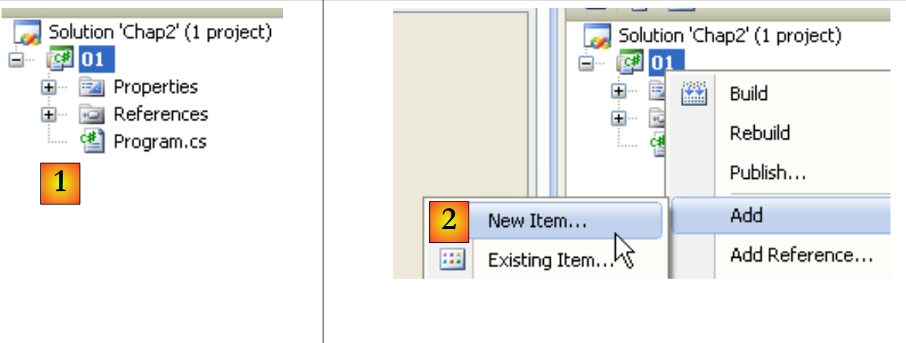
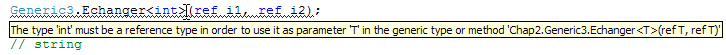
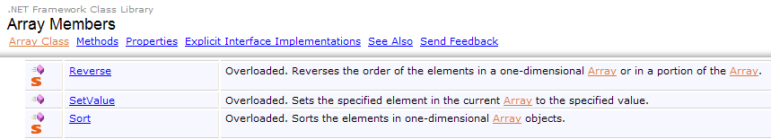

4. Klassen, Strukturen, Schnittstellen
4.1. Das Objekt am Beispiel
4.1.1. Allgemeines
Wir befassen uns nun anhand eines Beispiels mit der objektorientierten Programmierung. Ein Objekt ist eine Einheit, die Daten enthält, die seinen Zustand definieren (man nennt sie Felder, Attribute usw.), sowie Funktionen (man nennt sie Methoden). Ein Objekt wird nach einem Modell erstellt, das man Klasse nennt:
public class C1{
Type1 p1; // Feld p1
Type2 p2; // Feld p2
…
Type3 m3(…){ // Methode m3
…
}
Type4 m4(…){ // Methode m4
…
}
…
}
Ausgehend von der oben genannten Klasse C1 lassen sich zahlreiche Objekte O1, O2, … erstellen Alle verfügen über die Felder p1, p2, … und die Methoden m3, m4, … Sie weisen jedoch unterschiedliche Werte für ihre Felder auf, sodass jedes opi seinen eigenen Zustand hat. Wenn o1 ein Objekt vom Typ C1 ist, bezeichnet o1.p1 die Eigenschaft p1 von o1 und o1.m1 die Methode m1 von O1.
Betrachten wir ein erstes Objektmodell: die Klasse Personne.
4.1.2. Erstellung des C#-Projekts
In den vorherigen Beispielen hatten wir in einem Projekt nur eine einzige Quelldatei: Program.cs. Von nun an können wir mehrere Quelldateien in einem Projekt haben. Wir zeigen, wie das geht.
 |
Erstellen Sie in [1] ein neues Projekt. Wählen Sie in [2] „Konsolenanwendung“ aus. Behalten Sie in [3] den Standardwert bei. Bestätigen Sie in [4]. In [5] befindet sich das generierte Projekt. Der Inhalt von Program.cs lautet wie folgt:
using System;
using System.Collections.Generic;
using System.Linq;
using System.Text;
namespace ConsoleApplication1 {
class Program {
static void Main(string[] args) {
}
}
}
Speichern wir das erstellte Projekt:
 |
In [1] die Option zum Speichern. In [2] geben Sie den Ordner an, in dem das Projekt gespeichert werden soll. In [3] geben Sie dem Projekt einen Namen. Geben Sie in [5] an, dass Sie eine Lösung erstellen möchten. Eine Lösung ist eine Sammlung von Projekten. Geben Sie in [4] den Namen der Lösung ein. Bestätigen Sie in [6] die Speicherung.
 |
In [1] wird das Projekt gespeichert. In [2] fügen Sie dem Projekt ein neues Element hinzu.
 |
Geben Sie in [1] an, dass Sie eine Klasse hinzufügen möchten. Geben Sie in [2] den Namen der Klasse ein. Bestätigen Sie in [3] die Angaben. In [4] verfügt das Projekt [01] über eine neue Quelldatei Personne.cs:
using System;
using System.Collections.Generic;
using System.Linq;
using System.Text;
namespace ConsoleApplication1 {
class Personne {
}
}
Wir ändern den Namensraum jeder Quelldatei in Chap2 und entfernen den Import unnötiger Namensräume:
using System;
namespace Chap2 {
class Personne {
}
}
using System;
namespace Chap2 {
class Program {
static void Main(string[] args) {
}
}
}
4.1.3. Definition der Klasse „Person“
Die Definition der Klasse Personne in der Quelldatei [Personne.cs] lautet wie folgt:
using System;
namespace Chap2 {
public class Personne {
// Attribute
private string prenom;
private string nom;
private int age;
// Methode
public void Initialise(string P, string N, int age) {
this.prenom = P;
this.nom = N;
this.age = age;
}
// Methode
public void Identifie() {
Console.WriteLine("[{0}, {1}, {2}]", prenom, nom, age);
}
}
}
Hier haben wir die Definition einer Klasse, also eines Datentyps. Wenn wir Variablen dieses Typs anlegen, werden sie als Objekte oder Klasseninstanzen bezeichnet. Eine Klasse ist also eine Vorlage, anhand derer Objekte erstellt werden.
Die Mitglieder oder Felder einer Klasse können Daten (Attribute), Methoden (Funktionen) oder Eigenschaften sein. Eigenschaften sind spezielle Methoden, die dazu dienen, den Wert von Attributen des Objekts abzurufen oder festzulegen. Diese Felder können mit einem der folgenden drei Schlüsselwörter versehen sein:
Ein privates Feld (private) ist ausschließlich über die internen Methoden der Klasse zugänglich | |
Ein öffentliches Feld (public) ist für jede Methode zugänglich, unabhängig davon, ob sie innerhalb der Klasse definiert ist oder nicht | |
Ein geschütztes Feld (protected) ist ausschließlich über die internen Methoden der Klasse oder eines abgeleiteten Objekts zugänglich (siehe später das Konzept der Vererbung). |
Im Allgemeinen werden die Daten einer Klasse als privat deklariert, während ihre Methoden und Eigenschaften als öffentlich deklariert werden. Das bedeutet, dass der Benutzer eines Objekts (der Programmierer)
- keinen direkten Zugriff auf die privaten Daten des Objekts hat
- die öffentlichen Methoden des Objekts aufrufen kann, insbesondere diejenigen, die Zugriff auf dessen private Daten gewähren.
Die Syntax zur Deklaration einer C-Klasse lautet wie folgt:
public class C{
private donnée ou méthode ou propriété privée;
public donnée ou méthode ou propriété publique;
protected donnée ou méthode ou propriété protégée;
}
Die Reihenfolge der Deklaration der Attribute „private“, „protected“ und „public“ ist beliebig.
4.1.4. Die Methode „Initialise“
Kehren wir zu unserer Klasse „Person“ zurück, die wie folgt deklariert ist:
using System;
namespace Chap2 {
public class Personne {
// Attribute
private string prenom;
private string nom;
private int age;
// Methode
public void Initialise(string p, string n, int age) {
this.prenom = p;
this.nom = n;
this.age = age;
}
// Methode
public void Identifie() {
Console.WriteLine("[{0}, {1}, {2}]", prenom, nom, age);
}
}
}
Welche Funktion hat die Methode Initialise? Da nom, prenom und age private Daten der Klasse Personne sind, lauten die Anweisungen:
sind unzulässig. Wir müssen ein Objekt vom Typ Personne über eine öffentliche Methode initialisieren. Dies ist die Aufgabe der Methode Initialise. Wir schreiben:
Die Schreibweise p1.Initialise ist zulässig, da Initialise öffentlich zugänglich ist.
4.1.5. Der Operator „new“
Die Anweisungssequenz
ist fehlerhaft. Die Anweisung
erklärt p1 als Verweis auf ein Objekt vom Typ Personne. Dieses Objekt existiert noch nicht, daher ist p1 nicht initialisiert. Das ist so, als würde man schreiben:
wobei man mit dem Schlüsselwort null explizit angibt, dass die Variable p1 noch auf kein Objekt verweist. Wenn man anschließend schreibt
auf die Methode Initialise des Objekts, auf das p1 verweist. Dieses Objekt existiert jedoch noch nicht, und der Compiler meldet den Fehler. Damit p1 auf ein Objekt verweist, muss man schreiben:
Dadurch wird ein noch nicht initialisiertes Objekt vom Typ Personne erstellt: Die Attribute nom und prenom, bei denen es sich um Objektverweise vom Typ String handelt, erhalten den Wert null, und age den Wert 0. Es findet also eine Standardinitialisierung statt. Da p1 nun auf ein Objekt verweist, lautet die Initialisierungsanweisung für dieses Objekt
gültig.
4.1.6. Das Schlüsselwort „this“
Sehen wir uns den Code der Methode initialise an:
public void Initialise(string p, string n, int age) {
this.prenom = p;
this.nom = n;
this.age = age;
}
Die Anweisung this.prenom=p bedeutet, dass das Attribut prenom des aktuellen Objekts (this) den Wert p erhält. Das Schlüsselwort this bezeichnet das aktuelle Objekt: dasjenige, in dem sich die ausgeführte Methode befindet. Woher wissen wir das? Schauen wir uns an, wie die Initialisierung des Objekts erfolgt, auf das p1 im aufrufenden Programm verweist:
Es wird die Methode Initialise des Objekts p1 aufgerufen. Wenn in dieser Methode auf das Objekt this verwiesen wird, wird tatsächlich auf das Objekt p1 verwiesen. Die Methode Initialise hätte auch wie folgt geschrieben werden können:
public void Initialise(string p, string n, int age) {
prenom = p;
nom = n;
this.age = age;
}
Wenn eine Methode eines Objekts auf ein Attribut A dieses Objekts verweist, wird implizit die Schreibweise this.A verwendet. Bei Konflikten zwischen Bezeichnern muss diese Schreibweise explizit verwendet werden. Dies ist bei der folgenden Anweisung der Fall:
this.age=age;
wobei age sowohl ein Attribut des aktuellen Objekts als auch den von der Methode empfangenen Parameter age bezeichnet. In diesem Fall muss die Mehrdeutigkeit beseitigt werden, indem das Attribut age als this.age bezeichnet wird.
4.1.7. Ein Testprogramm
Hier ist ein kurzes Testprogramm. Es ist in der Quelldatei [Program.cs] geschrieben:
using System;
namespace Chap2 {
class P01 {
static void Main() {
Personne p1 = new Personne();
p1.Initialise("Jean", "Dupont", 30);
p1.Identifie();
}
}
}
Bevor das Projekt [01] ausgeführt wird, muss möglicherweise die auszuführende Quelldatei angegeben werden:
 |
In den Eigenschaften des Projekts [01] wird in [1] die auszuführende Klasse angegeben.
Die bei der Ausführung erzielten Ergebnisse lauten wie folgt:
4.1.8. Eine weitere Methode „Initialise“
Betrachten wir weiterhin die Klasse Personne und fügen wir ihr die folgende Methode hinzu:
public void Initialise(Personne p) {
prenom = p.prenom;
nom = p.nom;
age = p.age;
}
Wir haben nun zwei Methoden mit dem Namen Initialise: Dies ist zulässig, solange sie unterschiedliche Parameter akzeptieren. Dies ist hier der Fall. Der Parameter ist nun eine Referenz p auf eine Person. Die Attribute der Person p werden dann dem aktuellen Objekt (this) zugewiesen. Es ist zu beachten, dass die Methode Initialise direkten Zugriff auf die Attribute des Objekts p hat, obwohl diese vom Typ private sind. Dies gilt immer: Ein Objekt o1 einer Klasse C hat immer Zugriff auf die Attribute von Objekten derselben Klasse C.
Hier ist ein Test der neuen Klasse Personne:
using System;
namespace Chap2 {
class Program {
static void Main() {
Personne p1 = new Personne();
p1.Initialise("Jean", "Dupont", 30);
p1.Identifie();
Personne p2 = new Personne();
p2.Initialise(p1);
p2.Identifie();
}
}
}
und die Ergebnisse:
4.1.9. Konstruktoren der Klasse „Person“
Ein Konstruktor ist eine Methode, die den Namen der Klasse trägt und bei der Erstellung des Objekts aufgerufen wird. Er wird in der Regel zur Initialisierung des Objekts verwendet. Es handelt sich um eine Methode, die Argumente entgegennehmen kann, aber kein Ergebnis zurückgibt. Ihrem Prototyp oder ihrer Definition geht kein Typ voraus (nicht einmal void).
Wenn eine Klasse C einen Konstruktor hat, der n Argumente argi akzeptiert, können die Deklaration und Initialisierung eines Objekts dieser Klasse wie folgt erfolgen:
oder
Wenn eine Klasse C einen oder mehrere Konstruktoren hat, muss zwingend einer dieser Konstruktoren verwendet werden, um ein Objekt dieser Klasse zu erstellen. Wenn eine Klasse C keinen Konstruktor hat, verfügt sie über einen Standardkonstruktor, nämlich den Konstruktor ohne Parameter: public C(). Die Attribute des Objekts werden dann mit Standardwerten initialisiert. Genau das ist in den vorherigen Programmen geschehen, in denen wir geschrieben hatten:
Erstellen wir zwei Konstruktoren für unsere Klasse Personne:
using System;
namespace Chap2 {
public class Personne {
// Attribute
private string prenom;
private string nom;
private int age;
// Konstruktoren
public Personne(String p, String n, int age) {
Initialise(p, n, age);
}
public Personne(Personne P) {
Initialise(P);
}
// Methode
public void Initialise(string p, string n, int age) {
...
}
public void Initialise(Personne p) {
...
}
// Methode
public void Identifie() {
Console.WriteLine("[{0}, {1}, {2}]", prenom, nom, age);
}
}
}
Unsere beiden Konstruktoren rufen lediglich die zuvor behandelten Methoden Initialise auf. Zur Erinnerung: Wenn in einem Konstruktor beispielsweise die Notation Initialise(p) vorkommt, übersetzt der Compiler dies in this.Initialise(p). Im Konstruktor wird also die Methode Initialise aufgerufen, um das Objekt zu bearbeiten, auf das this verweist, d. h. das aktuelle Objekt, das gerade erstellt wird.
Hier ist ein kurzes Testprogramm:
using System;
namespace Chap2 {
class Program {
static void Main() {
Personne p1 = new Personne("Jean", "Dupont", 30);
p1.Identifie();
Personne p2 = new Personne(p1);
p2.Identifie();
}
}
}
und die erzielten Ergebnisse:
4.1.10. Objektreferenzen
Wir verwenden weiterhin dieselbe Klasse Personne. Das Testprogramm sieht nun wie folgt aus:
using System;
namespace Chap2 {
class Program2 {
static void Main() {
// p1
Personne p1 = new Personne("Jean", "Dupont", 30);
Console.Write("p1="); p1.Identifie();
// p2 verweist auf dasselbe Objekt wie p1
Personne p2 = p1;
Console.Write("p2="); p2.Identifie();
// p3 verweist auf ein Objekt, das eine Kopie des von p1 referenzierten Objekts sein wird
Personne p3 = new Personne(p1);
Console.Write("p3="); p3.Identifie();
// Der Zustand des von p1 referenzierten Objekts wird geändert
p1.Initialise("Micheline", "Benoît", 67);
Console.Write("p1="); p1.Identifie();
// Da p2 = p1 ist, muss sich der Zustand des von p2 referenzierten Objekts geändert haben
Console.Write("p2="); p2.Identifie();
// Da p3 nicht auf dasselbe Objekt wie p1 verweist, muss sich das von p3 referenzierte Objekt nicht geändert haben
Console.Write("p3="); p3.Identifie();
}
}
}
Die erzielten Ergebnisse lauten wie folgt:
Wenn man die Variable p1 wie folgt deklariert:
verweist p1 auf das Objekt Personne("Jean","Dupont",30), ist aber nicht das Objekt selbst. In C würde man sagen, dass es sich um einen Zeiger handelt, c.a.d, der auf die Adresse des erstellten Objekts verweist. Wenn man anschließend schreibt:
wird nicht das Objekt Personne("Jean","Dupont",30) geändert, sondern die Referenz p1 ändert ihren Wert. Das Objekt Personne("Jean","Dupont",30) geht „verloren“, wenn es von keiner anderen Variablen referenziert wird.
Wenn man schreibt:
wird der Zeiger p2 initialisiert: Er „zeigt“ auf dasselbe Objekt (er verweist auf dasselbe Objekt) wie der Zeiger p1. Wenn man also das Objekt ändert, auf das p1 „zeigt“ (oder auf das es verweist), ändert man damit auch das Objekt, auf das p2 verweist.
Wenn man schreibt:
wird ein neues Objekt Personne erstellt. Dieses neue Objekt wird von p3 referenziert. Wenn man das von p1 „verwiesene“ (oder referenzierte) Objekt ändert, hat dies keinerlei Auswirkungen auf das von p3 referenzierte Objekt. Dies zeigen die erzielten Ergebnisse.
4.1.11. Übergabe von Parametern vom Typ Objektreferenz
Im vorigen Kapitel haben wir die Arten der Parameterübergabe in einer Funktion untersucht, wenn diese einen einfachen C#-Typ darstellten, der durch eine Struktur .NET repräsentiert wurde. Schauen wir uns nun an, was passiert, wenn der Parameter eine Objektreferenz ist:
using System;
using System.Text;
namespace Chap1 {
class P12 {
public static void Main() {
// Beispiel 4
StringBuilder sb0 = new StringBuilder("essai0"), sb1 = new StringBuilder("essai1"), sb2 = new StringBuilder("essai2"), sb3;
Console.WriteLine("Dans fonction appelante avant appel : sb0={0}, sb1={1}, sb2={2}", sb0,sb1, sb2);
ChangeStringBuilder(sb0, sb1, ref sb2, out sb3);
Console.WriteLine("Dans fonction appelante après appel : sb0={0}, sb1={1}, sb2={2}, sb3={3}", sb0, sb1, sb2, sb3);
}
private static void ChangeStringBuilder(StringBuilder sbf0, StringBuilder sbf1, ref StringBuilder sbf2, out StringBuilder sbf3) {
Console.WriteLine("Début fonction appelée : sbf0={0}, sbf1={1}, sbf2={2}", sbf0,sbf1, sbf2);
sbf0.Append("*****");
sbf1 = new StringBuilder("essai1*****");
sbf2 = new StringBuilder("essai2*****");
sbf3 = new StringBuilder("essai3*****");
Console.WriteLine("Fin fonction appelée : sbf0={0}, sbf1={1}, sbf2={2}, sbf3={3}", sbf0, sbf1, sbf2, sbf3);
}
}
}
- Zeile 8: Definiert 3 Objekte vom Typ StringBuilder. Ein Objekt vom Typ StringBuilder befindet sich in der Nähe eines Objekts vom Typ string.. Bei der Bearbeitung eines Objekts vom Typ string wird ein neues Objekt vom Typ string zurückgegeben. In der folgenden Code-Sequenz:
In Zeile 1 wird ein Objekt string im Speicher angelegt, und s ist dessen Adresse. In Zeile 2 erstellt s.ToUpperCase() ein weiteres Objekt string im Speicher. Zwischen den Zeilen 1 und 2 hat sich also der Wert von s geändert (es zeigt nun auf das neue Objekt). Die Klasse StringBuilder ermöglicht es hingegen, eine Zeichenkette umzuwandeln, ohne dass ein zweites Objekt erstellt wird. Dies ist das oben angeführte Beispiel:
- Zeile 8: 4 Verweise [sb0, sb1, sb2, sb3] auf Objekte vom Typ StringBuilder
- Zeile 10: werden mit unterschiedlichen Modi an die Methode ChangeStringBuilder übergeben: sb0, sb1 mit dem Standardmodus, sb2 mit dem Schlüsselwort „ref“, sb3 mit dem Schlüsselwort „out“.
- Zeilen 15–22: Eine Methode mit den formalen Parametern [sbf0, sbf1, sbf2, sbf3]. Die Beziehungen zwischen den formalen Parametern sbfi und den effektiven Parametern sbi sind wie folgt:
- sbf0 und sb0 sind zu Beginn der Methode zwei unterschiedliche Referenzen, die auf dasselbe Objekt verweisen (Wertübergabe der Adressen)
- Das Gleiche gilt für sbf1 und sb1
- sbf2 und sb2 sind zu Beginn der Methode ein und dieselbe Referenz auf dasselbe Objekt (Schlüsselwort ref)
- sbf3 und sb3 sind nach Ausführung der Methode ein und dieselbe Referenz auf dasselbe Objekt (Schlüsselwort out)
Die folgenden Ergebnisse wurden erzielt:
Erläuterungen:
- sb0 und sbf0 sind zwei unterschiedliche Referenzen auf dasselbe Objekt. Dieses wurde über sbf0 – Zeile 3 – geändert. Diese Änderung ist über sb0 – Zeile 4 – einsehbar.
- sb1 und sbf1 sind zwei unterschiedliche Referenzen auf dasselbe Objekt. Der Wert von sbf1 wird in der Methode geändert und verweist nun auf ein neues Objekt – Zeile 3. Dies hat keinerlei Auswirkungen auf den Wert von sb1, das weiterhin auf dasselbe Objekt verweist – Zeile 4.
- sb2 und sbf2 sind ein und dieselbe Referenz auf dasselbe Objekt. Der Wert von sbf2 wird in der Methode geändert und verweist nun auf ein neues Objekt – Zeile 3. Da sbf2 und sb2 ein und dasselbe Objekt sind, wurde auch der Wert von sb2 geändert, und sb2 verweist auf dasselbe Objekt wie sbf2 – Zeilen 3 und 4.
- Vor dem Aufruf der Methode hatte sb3 keinen Wert. Nach dem Aufruf der Methode erhält sb3 den Wert von sbf3. Es gibt also zwei Verweise auf dasselbe Objekt – Zeilen 3 und 4
4.1.12. Temporäre Objekte
In einem Ausdruck kann der Konstruktor eines Objekts explizit aufgerufen werden: Das Objekt wird erstellt, wir haben jedoch keinen Zugriff darauf (um es beispielsweise zu ändern). Dieses temporäre Objekt wird für die Auswertung des Ausdrucks erstellt und anschließend verworfen. Der von ihm belegte Speicherplatz wird später automatisch von einem Programm namens „Garbage Collector“ freigegeben, dessen Aufgabe es ist, den Speicherplatz von Objekten zurückzugewinnen, auf die von den Programmdaten nicht mehr verwiesen wird.
Betrachten wir das folgende neue Testprogramm:
using System;
namespace Chap2 {
class Program {
static void Main() {
new Personne(new Personne("Jean", "Dupont", 30)).Identifie();
}
}
}
und ändern wir die Konstruktoren der Klasse Personne so, dass sie eine Meldung anzeigen:
// Konstruktoren
public Personne(String p, String n, int age) {
Console.WriteLine("Constructeur Personne(string, string, int)");
Initialise(p, n, age);
}
public Personne(Personne P) {
Console.Out.WriteLine("Constructeur Personne(Personne)");
Initialise(P);
}
Wir erhalten folgende Ergebnisse:
die die sukzessive Erstellung der beiden temporären Objekte zeigen.
4.1.13. Methoden zum Lesen und Schreiben privater Attribute
Wir fügen der Klasse Personne die erforderlichen Methoden hinzu, um den Status der Attribute der Objekte zu lesen oder zu ändern:
using System;
namespace Chap2 {
public class Personne {
// Attribute
private string prenom;
private string nom;
private int age;
// Konstruktoren
public Personne(String p, String n, int age) {
Console.WriteLine("Constructeur Personne(string, string, int)");
Initialise(p, n, age);
}
public Personne(Personne p) {
Console.Out.WriteLine("Constructeur Personne(Personne)");
Initialise(p);
}
// Methode
public void Initialise(string p, string n, int age) {
this.prenom = p;
this.nom = n;
this.age = age;
}
public void Initialise(Personne p) {
prenom = p.prenom;
nom = p.nom;
age = p.age;
}
// Zugriffsmethoden
public String GetPrenom() {
return prenom;
}
public String GetNom() {
return nom;
}
public int GetAge() {
return age;
}
//Modifikatoren
public void SetPrenom(String P) {
this.prenom = P;
}
public void SetNom(String N) {
this.nom = N;
}
public void SetAge(int age) {
this.age = age;
}
// Methode
public void Identifie() {
Console.WriteLine("[{0}, {1}, {2}]", prenom, nom, age);
}
}
}
Wir testen die neue Klasse mit dem folgenden Programm:
using System;
namespace Chap2 {
class Program {
static void Main(string[] args) {
Personne p = new Personne("Jean", "Michelin", 34);
Console.Out.WriteLine("p=(" + p.GetPrenom() + "," + p.GetNom() + "," + p.GetAge() + ")");
p.SetAge(56);
Console.Out.WriteLine("p=(" + p.GetPrenom() + "," + p.GetNom() + "," + p.GetAge() + ")");
}
}
}
und erhalten folgende Ergebnisse:
4.1.14. Die Eigenschaften
Es gibt noch eine weitere Möglichkeit, auf die Attribute einer Klasse zuzugreifen: die Erstellung von Eigenschaften. Diese ermöglichen es uns, private Attribute so zu bearbeiten, als wären sie öffentlich.
Betrachten wir die folgende Klasse Personne, in der die zuvor genannten Accessoren und Modifikatoren durch Lese- und Schreib-Eigenschaften ersetzt wurden:
using System;
namespace Chap2 {
public class Personne {
// Attribute
private string prenom;
private string nom;
private int age;
// Konstruktoren
public Personne(String p, String n, int age) {
Initialise(p, n, age);
}
public Personne(Personne p) {
Initialise(p);
}
// Methode
public void Initialise(string p, string n, int age) {
this.prenom = p;
this.nom = n;
this.age = age;
}
public void Initialise(Personne p) {
prenom = p.prenom;
nom = p.nom;
age = p.age;
}
// Eigenschaften
public string Prenom {
get { return prenom; }
set {
// Ist der Vorname gültig?
if (value == null || value.Trim().Length == 0) {
throw new Exception("prénom (" + value + ") invalide");
} else {
prenom = value;
}
}//if
}//Vorname
public string Nom {
get { return nom; }
set {
// Ist der Nachname gültig?
if (value == null || value.Trim().Length == 0) {
throw new Exception("nom (" + value + ") invalide");
} else { nom = value; }
}//if
}//Nachname
public int Age {
get { return age; }
set {
// Alter gültig?
if (value >= 0) {
age = value;
} else
throw new Exception("âge (" + value + ") invalide");
}//if
}//Alter
// Methode
public void Identifie() {
Console.WriteLine("[{0}, {1}, {2}]", prenom, nom, age);
}
}
}
Eine Eigenschaft ermöglicht es, den Wert eines Attributs auszulesen (get) oder festzulegen (set). Eine Eigenschaft wird wie folgt deklariert:
wobei Type der Typ des Attributs sein muss, das von der Eigenschaft verwaltet wird. Sie kann zwei Methoden namens „get“ und „set“ haben. Die Methode „get“ ist in der Regel dafür zuständig, den Wert des von ihr verwalteten Attributs zurückzugeben (sie könnte auch etwas anderes zurückgeben, nichts spricht dagegen). Die „set“-Methode erhält einen Parameter namens „value“, den sie normalerweise dem von ihr verwalteten Attribut zuweist. Sie kann dabei die Gültigkeit des empfangenen Werts überprüfen und gegebenenfalls eine Ausnahme auslösen, falls sich der Wert als ungültig erweist. Genau das geschieht hier.
Wie werden diese get- und set-Methoden aufgerufen? Betrachten wir das folgende Testprogramm:
using System;
namespace Chap2 {
class Program {
static void Main(string[] args) {
Personne p = new Personne("Jean", "Michelin", 34);
Console.Out.WriteLine("p=(" + p.Prenom + "," + p.Nom + "," + p.Age + ")");
p.Age = 56;
Console.Out.WriteLine("p=(" + p.Prenom + "," + p.Nom + "," + p.Age + ")");
try {
p.Age = -4;
} catch (Exception ex) {
Console.Error.WriteLine(ex.Message);
}//try-catch
}
}
}
In der Anweisung
Console.Out.WriteLine("p=(" + p.Prenom + "," + p.Nom + "," + p.Age + ")");
sollen die Werte der Eigenschaften Prenom, Nom und Age der Person p abgerufen werden. Dabei wird die get-Methode dieser Eigenschaften aufgerufen, die den Wert des von ihnen verwalteten Attributs zurückgibt.
In der Anweisung
soll der Wert der Eigenschaft Age festgelegt werden. Dabei wird die set-Methode dieser Eigenschaft aufgerufen. Sie erhält den Wert 56 als Parameter „value“.
Eine Eigenschaft P einer Klasse C, die nur die get-Methode definiert, wird als schreibgeschützt bezeichnet. Ist c ein Objekt der Klasse C, wird die Operation c.P=Wert vom Compiler abgelehnt.
Die Ausführung des vorstehenden Testprogramms liefert folgende Ergebnisse:
Eigenschaften ermöglichen es uns also, private Attribute so zu behandeln, als wären sie öffentlich. Ein weiteres Merkmal von Eigenschaften ist, dass sie in Verbindung mit einem Konstruktor gemäß der folgenden Syntax verwendet werden können:
Diese Syntax entspricht dem folgenden Code:
Die Reihenfolge der Eigenschaften spielt keine Rolle. Hier ein Beispiel.
Der Klasse Personne wird ein neuer Konstruktor ohne Parameter hinzugefügt:
public Personne() {
}
Der Konstruktor initialisiert die Mitglieder des Objekts nicht. Dies wird als Standardkonstruktor bezeichnet. Er wird verwendet, wenn die Klasse keinen Konstruktor definiert.
Der folgende Code erstellt und initialisiert (Zeile 6) ein neues Personne mit der zuvor vorgestellten Syntax:
using System;
namespace Chap2 {
class Program {
static void Main(string[] args) {
Personne p2 = new Personne { Age = 7, Prenom = "Arthur", Nom = "Martin" };
Console.WriteLine("p2=({0},{1},{2})", p2.Prenom, p2.Nom, p2.Age);
}
}
}
In Zeile 6 oben wird der Konstruktor ohne Parameter Personne() verwendet. In diesem speziellen Fall hätte man auch schreiben können
Personne p2 = new Personne() { Age = 7, Prenom = "Arthur", Nom = "Martin" };
schreiben, aber die Klammern des Konstruktors Personne() ohne Parameter sind in dieser Syntax nicht zwingend erforderlich.
Die Ergebnisse der Ausführung lauten wie folgt:
In vielen Fällen beschränken sich die Methoden get und set einer Eigenschaft darauf, ein privates Feld ohne weitere Verarbeitung zu lesen und zu schreiben. In diesem Szenario kann man daher eine automatische Eigenschaft verwenden, die wie folgt deklariert ist:
Das der Eigenschaft zugeordnete private Feld wird nicht deklariert. Es wird automatisch vom Compiler generiert. Der Zugriff erfolgt ausschließlich über die Eigenschaft. Anstatt also zu schreiben:
private string prenom;
...
// zugehörige Eigenschaft
public string Prenom {
get { return prenom; }
set {
// Ist der Vorname gültig?
if (value == null || value.Trim().Length == 0) {
throw new Exception("prénom (" + value + ") invalide");
} else {
prenom = value;
}
}//if
}//Vorname
kann man schreiben:
ohne das private Feld prenom zu deklarieren. Der Unterschied zwischen den beiden vorangegangenen Eigenschaften besteht darin, dass die erste die Gültigkeit des Vornamens in set überprüft, während die zweite keine Überprüfung vornimmt.
Die Verwendung der automatischen Eigenschaft Prenom entspricht der Deklaration eines öffentlichen Feldes Prenom:
Man kann sich fragen, ob es einen Unterschied zwischen den beiden Deklarationen gibt. Es wird davon abgeraten, public als Feld einer Klasse zu deklarieren. Dies verstößt gegen das Konzept der Kapselung des Zustands eines Objekts, der privat sein und über öffentliche Methoden zugänglich gemacht werden sollte.
Wird die automatische Eigenschaft als virtuelle, deklariert, kann sie in einer Unterklasse neu definiert werden:
class Class1 {
public virtual string Prop { get; set; }
}
class Class2 : Class1 {
public override string Prop { get { return base.Prop; } set {... } }
}
Zeile 2 oben: kann die Unterklasse Class2 in set, Code einfügen, der die Gültigkeit des Werts überprüft, der der automatischen Eigenschaft base.Prop der Oberklasse Class1 zugewiesen wurde.
4.1.15. Klassenmethoden und -attribute
Angenommen, man möchte die Anzahl der in einer Anwendung erstellten Objekte vom Typ Personne zählen. Man könnte selbst einen Zähler verwalten, läuft dabei jedoch Gefahr, temporäre Objekte zu übersehen, die hier und da erstellt werden. Es erscheint sicherer, in die Konstruktoren der Klasse Personne eine Anweisung einzufügen, die einen Zähler inkrementiert. Das Problem besteht darin, eine Referenz auf diesen Zähler zu übergeben, damit der Konstruktor ihn inkrementieren kann: Man muss ihnen einen neuen Parameter übergeben. Man kann den Zähler auch in die Definition der Klasse aufnehmen. Da es sich um ein Attribut der Klasse selbst und nicht um das einer bestimmten Instanz dieser Klasse handelt, deklariert man ihn anders mit dem Schlüsselwort static:
private static long nbPersonnes;
Um darauf zu verweisen, schreibt man Personne.nbPersonnes, um zu zeigen, dass es sich um ein Attribut der Klasse Personne selbst handelt. Hier haben wir ein privates Attribut erstellt, auf das man außerhalb der Klasse keinen direkten Zugriff hat. Daher erstellen wir eine öffentliche Eigenschaft, um Zugriff auf das Klassenattribut nbPersonnes zu gewähren. Um den Wert von nbPersonnes zu ermitteln, benötigt die Methode get dieser Eigenschaft kein bestimmtes Personne-Objekt: Tatsächlich ist nbPersonnes das Attribut einer ganzen Klasse. Daher wird eine ebenfalls als static deklarierte Eigenschaft benötigt:
public static long NbPersonnes {
get { return nbPersonnes; }
}
die von außen mit der Syntax Personne.NbPersonnes aufgerufen wird. Hier ein Beispiel.
Die Klasse Personne sieht dann wie folgt aus:
using System;
namespace Chap2 {
public class Personne {
// Klassenattribute
private static long nbPersonnes;
public static long NbPersonnes {
get { return nbPersonnes; }
}
// Instanzattribute
private string prenom;
private string nom;
private int age;
// Konstruktoren
public Personne(String p, String n, int age) {
Initialise(p, n, age);
nbPersonnes++;
}
public Personne(Personne p) {
Initialise(p);
nbPersonnes++;
}
...
}
In den Zeilen 20 und 24 erhöhen die Konstruktoren das statische Feld aus Zeile 7.
Mit dem folgenden Programm:
using System;
namespace Chap2 {
class Program {
static void Main(string[] args) {
Personne p1 = new Personne("Jean", "Dupont", 30);
Personne p2 = new Personne(p1);
new Personne(p1);
Console.WriteLine("Nombre de personnes créées : " + Personne.NbPersonnes);
}
}
}
erhält man folgende Ergebnisse:
4.1.16. Ein Array von Personen
Ein Objekt ist ein Datenelement wie jedes andere, und als solches können mehrere Objekte in einem Array zusammengefasst werden:
using System;
namespace Chap2 {
class Program {
static void Main(string[] args) {
// ein Array von Personen
Personne[] amis = new Personne[3];
amis[0] = new Personne("Jean", "Dupont", 30);
amis[1] = new Personne("Sylvie", "Vartan", 52);
amis[2] = new Personne("Neil", "Armstrong", 66);
// Anzeige
foreach (Personne ami in amis) {
ami.Identifie();
}
}
}
}
- Zeile 7: Erstellt ein Array mit 3 Elementen vom Typ Personne. Diese 3 Elemente werden hier mit den Werten null und c.a.d initialisiert, wobei sie auf kein Objekt verweisen. Auch hier wird im weiteren Sinne von einem Objektarray gesprochen, obwohl es sich lediglich um ein Array von Objektreferenzen handelt. Die Erstellung des Objektarrays, das selbst ein Objekt ist (Vorhandensein von new), erzeugt keine Objekte des Typs seiner Elemente: Dies muss anschließend erfolgen.
- Zeilen 8–10: Erstellung der 3 Objekte vom Typ Personne
- Zeilen 12–14: Anzeige des Inhalts des Arrays amis
Man erhält folgende Ergebnisse:
4.2. Vererbung am Beispiel
4.2.1. Allgemeines
Wir befassen uns hier mit dem Begriff der Vererbung. Das Ziel der Vererbung ist es, eine bestehende Klasse so „anzupassen“, dass sie unseren Anforderungen entspricht. Nehmen wir an, wir möchten eine Klasse Enseignant erstellen: Ein Lehrer ist eine besondere Person. Er verfügt über Attribute, die eine andere Person nicht hat: zum Beispiel das Fach, das er unterrichtet. Aber er hat auch die Attribute jeder Person: Vorname, Nachname und Alter. Ein Lehrer gehört also vollständig zur Klasse Personne, verfügt jedoch über zusätzliche Attribute. Anstatt eine Klasse Enseignant von Grund auf neu zu definieren, wäre es sinnvoller, auf die bereits vorhandene Klasse Personne zurückzugreifen und diese an die besonderen Merkmale von Lehrern anzupassen. Das Konzept der Vererbung ermöglicht uns genau das.
Um auszudrücken, dass die Klasse Enseignant die Eigenschaften der Klasse Personne erbt, schreibt man:
Personne wird als übergeordnete Klasse (oder Mutterklasse) und Enseignant als abgeleitete Klasse (oder Tochterklasse) bezeichnet. Ein Objekt vom Typ Enseignant verfügt über alle Eigenschaften eines Objekts vom Typ Personne: Es hat dieselben Attribute und dieselben Methoden. Diese Attribute und Methoden der übergeordneten Klasse werden in der Definition der abgeleiteten Klasse nicht wiederholt: Man beschränkt sich darauf, die von der abgeleiteten Klasse hinzugefügten Attribute und Methoden anzugeben:
Wir nehmen an, dass die Klasse Personne wie folgt definiert ist:
using System;
namespace Chap2 {
public class Personne {
// Klassenattribute
private static long nbPersonnes;
public static long NbPersonnes {
get { return nbPersonnes; }
}
// Instanzattribute
private string prenom;
private string nom;
private int age;
// Konstruktoren
public Personne(String prenom, String nom, int age) {
Nom = nom;
Prenom = prenom;
Age = age;
nbPersonnes++;
Console.WriteLine("Constructeur Personne(string, string, int)");
}
public Personne(Personne p) {
Nom = p.Nom;
Prenom = p.Prenom;
Age = p.Age;
nbPersonnes++;
Console.WriteLine("Constructeur Personne(Personne)");
}
// Eigenschaften
public string Prenom {
get { return prenom; }
set {
// Ist der Vorname gültig?
if (value == null || value.Trim().Length == 0) {
throw new Exception("prénom (" + value + ") invalide");
} else {
prenom = value;
}
}//if
}//Vorname
public string Nom {
get { return nom; }
set {
// Ist der Nachname gültig?
if (value == null || value.Trim().Length == 0) {
throw new Exception("nom (" + value + ") invalide");
} else { nom = value; }
}//if
}//Nachname
public int Age {
get { return age; }
set {
// Alter gültig?
if (value >= 0) {
age = value;
} else
throw new Exception("âge (" + value + ") invalide");
}//if
}//Alter
// Eigenschaft
public string Identite {
get { return String.Format("[{0}, {1}, {2}]", prenom, nom, age);}
}
}
}
Die Methode Identifie wurde durch die schreibgeschützte Eigenschaft Identite ersetzt, die die Person identifiziert. Wir erstellen eine Klasse Enseignant, die von der Klasse Personne erbt:
using System;
namespace Chap2 {
class Enseignant : Personne {
// Attribute
private int section;
// Konstruktor
public Enseignant(string prenom, string nom, int age, int section)
: base(prenom, nom, age) {
// Der Abschnitt wird über die Eigenschaft „Section“ gespeichert
Section = section;
// Verfolgung
Console.WriteLine("Construction Enseignant(string, string, int, int)");
}//Konstruktor
// Eigenschaft „Section“
public int Section {
get { return section; }
set { section = value; }
}// Abschnitt
}
}
Die Klasse Enseignant ergänzt die Methoden und Attribute der Klasse Personne:
- Zeile 4: Die Klasse Enseignant leitet sich von der Klasse Personne ab
- Zeile 6: ein Attribut section, das die Nummer der Sektion angibt, zu der der Lehrer im Lehrerkollegium gehört (grob gesagt eine Sektion pro Fach). Auf dieses private Attribut kann über die öffentliche Eigenschaft Section in den Zeilen 18–21 zugegriffen werden
- Zeile 9: Ein neuer Konstruktor, mit dem alle Attribute eines Lehrers initialisiert werden können
4.2.2. Erstellung eines Lehrerkörpers-Objekts
Eine untergeordnete Klasse erbt die Konstruktoren ihrer übergeordneten Klasse nicht. Sie muss daher ihre eigenen Konstruktoren definieren. Der Konstruktor der Klasse Enseignant lautet wie folgt:
// Konstruktor
public Enseignant(string prenom, string nom, int age, int section)
: base(prenom, nom, age) {
// Abschnitt speichern
Section = section;
// Nachverfolgung
Console.WriteLine("Construction enseignant(string, string, int, int)");
}//Hersteller
Die Deklaration
public Enseignant(string prenom, string nom, int age, int section)
: base(prenom, nom, age) {
besagt, dass der Konstruktor vier Parameter entgegennimmt: prenom, nom, age, section, und drei Parameter (prenom,nom,age) an seine Basisklasse, hier die Klasse Personne, übergibt. Es ist bekannt, dass diese Klasse einen Konstruktor „Personne(string, string, int)“ besitzt, der es ermöglicht, eine Person mit den übergebenen Parametern (prenom,nom,age) zu erstellen. Sobald die Erstellung der Basisklasse abgeschlossen ist, wird die Erstellung des Objekts Enseignant durch die Ausführung des Konstruktor-Körpers fortgesetzt:
Es ist zu beachten, dass links vom Gleichheitszeichen nicht das Attribut section des Objekts verwendet wurde, sondern die damit verbundene Eigenschaft Section. Dadurch kann der Konstruktor von eventuellen Gültigkeitsprüfungen profitieren, die diese Methode durchführen könnte. Dadurch wird vermieden, dass diese an zwei verschiedenen Stellen platziert werden müssen: im Konstruktor und in der Eigenschaft.
Zusammenfassend lässt sich sagen, dass der Konstruktor einer abgeleiteten Klasse:
- übermittelt an seine Basisklasse die Parameter, die diese zum Erstellen benötigt
- verwendet die übrigen Parameter, um seine eigenen Attribute zu initialisieren
Man hätte auch folgendermaßen schreiben können:
// Konstruktor
public Enseignant(string prenom, string nom, int age, int section){
this.prenom=prenom;
this.nom=nom;
this.age=age;
this.section=section;
}
Das ist nicht möglich. Die Klasse Personne hat ihre drei Felder prenom, nom und age als privat (private) deklariert. Nur Objekte derselben Klasse haben direkten Zugriff auf diese Felder. Alle anderen Objekte, einschließlich untergeordneter Objekte wie in diesem Fall, müssen über öffentliche Methoden darauf zugreifen. Dies wäre anders gewesen, wenn die Klasse Personne die drei Felder als geschützt (protected) deklariert hätte: In diesem Fall hätten abgeleitete Klassen direkten Zugriff auf die drei Felder gehabt. In unserem Beispiel war die Verwendung des Konstruktors der übergeordneten Klasse daher die richtige Lösung und entspricht der üblichen Vorgehensweise: Beim Erstellen eines untergeordneten Objekts wird zunächst der Konstruktor des übergeordneten Objekts aufgerufen und anschließend die spezifischen Initialisierungen für das untergeordnete Objekt (in unserem Beispiel section) durchgeführt.
Versuchen wir es mit einem ersten Testprogramm [Program.cs]:
using System;
namespace Chap2 {
class Program {
static void Main(string[] args) {
Console.WriteLine(new Enseignant("Jean", "Dupont", 30, 27).Identite);
}
}
}
Dieses Programm beschränkt sich darauf, ein Objekt Enseignant (new) anzulegen und es zu identifizieren. Die Klasse Enseignant verfügt über keine Methode Identite, aber ihre übergeordnete Klasse hat eine, die zudem öffentlich ist: Durch Vererbung wird sie zu einer öffentlichen Methode der Klasse Enseignant.
Das gesamte Projekt sieht wie folgt aus:
 |
Die erzielten Ergebnisse lauten wie folgt:
Man sieht, dass:
- ein Objekt Personne (Zeile 1) vor dem Objekt Enseignant (Zeile 2) erstellt wurde
- die ermittelte Identität ist die des Objekts Personne
4.2.3. Neudefinition einer Methode oder einer Eigenschaft
Im vorherigen Beispiel hatten wir die Identität des Teils Personne des Lehrers, aber es fehlen bestimmte Informationen, die für die Klasse Enseignant (die Klasse) spezifisch sind. Daher müssen wir eine Eigenschaft definieren, mit der der Lehrer identifiziert werden kann:
using System;
namespace Chap2 {
class Enseignant : Personne {
// Attribute
private int section;
// Konstruktor
public Enseignant(string prenom, string nom, int age, int section)
: base(prenom, nom, age) {
// Der Abschnitt wird über die Eigenschaft „Section“ gespeichert
Section = section;
// Verfolgung
Console.WriteLine("Construction Enseignant(string, string, int, int)");
}//Konstruktor
// Eigenschaft „Section“
public int Section {
get { return section; }
set { section = value; }
}// Abschnitt
// Eigenschaft „Identität“
public new string Identite {
get { return String.Format("Enseignant[{0},{1}]", base.Identite, Section); }
}
}
}
In den Zeilen 24–26 stützt sich die Eigenschaft Identite der Klasse Enseignant auf die Eigenschaft Identite ihrer übergeordneten Klasse (base.Identite) (Zeile 25), um ihren Teil „Personne“ anzuzeigen, und wird anschließend durch das Feld section ergänzt, das der Klasse Enseignant eigen ist. Beachten Sie die Deklaration der Eigenschaft Identite:
public new string Identite{
Nehmen wir ein Objekt enseignant E an. Dieses Objekt enthält ein Objekt Personne:
 |
Die Eigenschaft „Identite“ ist sowohl in der Klasse Enseignant als auch in ihrer übergeordneten Klasse Personne definiert. In der untergeordneten Klasse „Enseignant“ muss der Eigenschaft „Identite“ das Schlüsselwort „new“ vorangestellt werden, um anzugeben, dass eine neue Eigenschaft „Identite“ für die Klasse „Enseignant.“ neu definiert wird
public new string Identite{
Die Klasse Enseignant verfügt nun über zwei Eigenschaften Identite:
- die von der übergeordneten Klasse Personne geerbte
- eine eigene
Wenn E ein Objekt vom Typ Enseignant ist, bezeichnet E.Identite die Eigenschaft Identite der Klasse Enseignant. Man sagt, dass die Eigenschaft Identite der untergeordneten Klasse die Eigenschaft Identite der übergeordneten Klasse neu definiert oder verdeckt. Allgemein gilt: Wenn O ein Objekt und M eine Methode ist, sucht das System zur Ausführung der Methode O.M nach einer Methode M in der folgenden Reihenfolge:
- in der Klasse des Objekts O
- in seiner übergeordneten Klasse, falls vorhanden
- in der übergeordneten Klasse der übergeordneten Klasse, sofern diese existiert
- usw.
Die Vererbung ermöglicht es also, in der Tochterklasse Methoden/Eigenschaften mit demselben Namen wie in der Elternklasse neu zu definieren. Dadurch lässt sich die Tochterklasse an ihre eigenen Anforderungen anpassen. In Verbindung mit dem Polymorphismus, den wir etwas später behandeln werden, ist die Neudefinition von Methoden/Eigenschaften der Hauptvorteil der Vererbung.
Betrachten wir dasselbe Testprogramm wie zuvor:
using System;
namespace Chap2 {
class Program {
static void Main(string[] args) {
Console.WriteLine(new Enseignant("Jean", "Dupont", 30, 27).Identite);
}
}
}
Diesmal sind die Ergebnisse wie folgt:
4.2.4. Polymorphismus
Betrachten wir eine Klassenlinie: C0 ← C1 ← C2 ← … ← Cn
wobei Ci ← Cj angibt, dass die Klasse Cj von der Klasse Ci abgeleitet ist. Daraus folgt, dass die Klasse Cj alle Eigenschaften der Klasse Ci sowie weitere Eigenschaften besitzt. Seien Oi Objekte vom Typ Ci. Es ist zulässig, Folgendes zu schreiben:
Tatsächlich verfügt die Klasse Cj durch Vererbung über alle Merkmale der Klasse Ci sowie über weitere. Somit enthält ein Objekt Oj vom Typ Cj ein Objekt vom Typ Ci. Die Operation
bewirkt, dass Oi eine Referenz auf das im Objekt Oj enthaltene Objekt vom Typ Ci ist.
Die Tatsache, dass eine Variable Oi der Klasse Ci nicht nur auf ein Objekt der Klasse Ci verweisen kann, sondern tatsächlich auf jedes von der Klasse Ci, abgeleitete Objekt, wird als Polymorphismus bezeichnet: die Fähigkeit einer Variablen, auf verschiedene Objekttypen zu verweisen.
Nehmen wir ein Beispiel und betrachten wir die folgende klassenunabhängige Funktion (static):
Man könnte genauso gut schreiben
wie auch
Im letzteren Fall erhält der formale Parameter p vom Typ Personne der statischen Methode Affiche einen Wert vom Typ Enseignant. Da der Typ Enseignant vom Typ Personne abgeleitet ist, ist dies zulässig.
4.2.5. Neudefinition und Polymorphismus
Ergänzen wir unsere Methode Affiche:
public static void Affiche(Personne p) {
// zeigt die Identität von p an
Console.WriteLine(p.Identite);
}//zeigt an
Die Eigenschaft p.Identite gibt eine Zeichenkette zurück, die das Objekt „Person“ p identifiziert. Was passiert im vorherigen Beispiel, wenn der an die Methode Affiche übergebene Parameter ein Objekt vom Typ Enseignant ist:
Enseignant e = new Enseignant(...);
Affiche(e);
Betrachten wir das folgende Beispiel:
using System;
namespace Chap2 {
class Program2 {
static void Main(string[] args) {
// einen Lehrer
Enseignant e = new Enseignant("Lucile", "Dumas", 56, 61);
Affiche(e);
// eine Person
Personne p = new Personne("Jean", "Dupont", 30);
Affiche(p);
}
// zeigt
public static void Affiche(Personne p) {
// zeigt die Identität von p an
Console.WriteLine(p.Identite);
}//zeigt an
}
}
Die Ergebnisse lauten wie folgt:
Die Ausführung zeigt, dass die Anweisung p.Identite (Zeile 17) jedes Mal die Eigenschaft Identite eines Personne ausgeführt hat, zunächst (Zeile 7) die in Enseignant enthaltene Person e und anschließend (Zeile 10) die Personne p selbst. Sie hat sich nicht an das Objekt angepasst, das tatsächlich als Parameter an Affiche übergeben wurde. Wir hätten es vorgezogen, die vollständige Identität des Enseignant e zu erhalten. Dazu hätte die Notation p.Identite auf die Eigenschaft Identite des Objekts verweisen müssen, auf das p tatsächlich verweist, anstatt auf die Eigenschaft Identite des Teils „Personne“ des Objekts, auf das p tatsächlich verweist.
Dieses Ergebnis lässt sich erzielen, indem man Identite in der Basisklasse Personne als virtuelle Eigenschaft (virtual) deklariert:
public virtual string Identite {
get { return String.Format("[{0}, {1}, {2}]", prenom, nom, age); }
}
Das Schlüsselwort „virtual“ macht Identite zu einer virtuellen Eigenschaft. Dieses Schlüsselwort kann auch auf Methoden angewendet werden. Unterklassen, die eine virtuelle Eigenschaft oder Methode neu definieren, müssen daher das Schlüsselwort „override“ anstelle von „new“ verwenden, um ihre neu definierte Eigenschaft bzw. Methode zu kennzeichnen. So wird in der Klasse Enseignant die Eigenschaft Identite wie folgt neu definiert:
public override string Identite {
get { return String.Format("Enseignant[{0},{1}]", base.Identite, Section); }
}
Das vorstehende Programm liefert dann folgende Ergebnisse:
Diesmal, in Zeile 3, haben wir tatsächlich die vollständige Identität des Lehrers erhalten. Definieren wir nun statt einer Eigenschaft eine Methode neu. Die Klasse object (C#-Alias von System.Object) ist die „Überklasse“ aller C#-Klassen. Wenn wir also schreiben:
schreibt man implizit:
Die Klasse System.Object definiert eine virtuelle Methode ToString:
 |
Die Methode ToString gibt den Namen der Klasse zurück, zu der das Objekt gehört, wie das folgende Beispiel zeigt:
using System;
namespace Chap2 {
class Program2 {
static void Main(string[] args) {
// ein Lehrer
Console.WriteLine(new Enseignant("Lucile", "Dumas", 56, 61).ToString());
// eine Person
Console.WriteLine(new Personne("Jean", "Dupont", 30).ToString());
}
}
}
Die erzeugten Ergebnisse lauten wie folgt:
Es ist zu beachten, dass wir die Methode ToString in den Klassen Personne und Enseignant zwar nicht neu definiert haben, kann man dennoch feststellen, dass die Methode ToString der Klasse Object den tatsächlichen Klassennamen des Objekts anzeigen konnte.
Definieren wir die Methode ToString in den Klassen Personne und Enseignant neu:
// Methode ToString
public override string ToString() {
return Identite;
}
Die Definition ist in beiden Klassen identisch. Betrachten wir das folgende Testprogramm:
using System;
namespace Chap2 {
class Program3 {
public static void Main() {
// ein Lehrer
Enseignant e = new Enseignant("Lucile", "Dumas", 56, 61);
Affiche(e);
// eine Person
Personne p = new Personne("Jean", "Dupont", 30);
Affiche(p);
}
// Plakat
public static void Affiche(Personne p) {
// Identitätsplakat von p
Console.WriteLine(p);
}//Plakat
}
}
Betrachten wir die Methode Affiche, die als Parameter eine Person p akzeptiert. In Zeile 15 hat die Methode WriteLine der Klasse Console keine Variante, die einen Parameter vom Typ Personne akzeptiert. Unter den verschiedenen Varianten von Writeline gibt es eine, die als Parameter einen Typ Object akzeptiert. Der Compiler wird diese Methode, WriteLine(Object o), verwenden, da diese Signatur bedeutet, dass der Parameter o vom Typ Object oder davon abgeleitet sein kann. Da Object die Oberklasse aller Klassen ist, kann jedes Objekt als Parameter an WriteLine übergeben werden, also auch ein Objekt vom Typ Personne oder Enseignant. Die Methode WriteLine(Object o) schreibt o.ToString() in den Schreibstrom Out. Da die Methode ToString virtuell ist, wird – sofern das Objekt o (vom Typ Object oder davon abgeleitet) die Methode ToString neu definiert hat – letztere verwendet. Dies ist hier bei den Klassen Personne und Enseignant der Fall.
Dies zeigen die Ausführungsergebnisse:
4.3. Die Bedeutung eines Operators für eine Klasse neu definieren
4.3.1. Einleitung
Betrachten wir die Anweisung
wobei op1 und op2 zwei Operanden sind. Es ist möglich, die Bedeutung des Operators + neu zu definieren. Wenn der Operand op1 ein Objekt der Klasse C1 ist, muss in der Klasse C1 eine statische Methode mit folgender Signatur definiert werden:
Wenn der Compiler auf die Anweisung
, übersetzt er diese in C1.operator+(op1,op2). Der von der Methode operator zurückgegebene Typ ist wichtig. Betrachten wir nämlich die Operation op1+op2+op3. Sie wird vom Compiler in (op1+op2)+op3 übersetzt. Sei res12 das Ergebnis von op1+op2. Die anschließend durchgeführte Operation ist res12+op3. Wenn res12 vom Typ C1 ist, wird auch sie in C1.operator+(res12,op3) übersetzt. Auf diese Weise lassen sich die Operationen aneinanderreihen.
Man kann auch unäre Operatoren neu definieren, die nur einen einzigen Operanden haben. Wenn also op1 ein Objekt vom Typ C1 ist, kann die Operation op1++ durch eine statische Methode der Klasse C1 neu definiert werden:
Was hier gesagt wurde, gilt für die meisten Operatoren, allerdings mit einigen Ausnahmen:
- Die Operatoren == und != müssen gleichzeitig neu definiert werden
- Die Operatoren &&, ||, [], (), +=, -=, ... können nicht neu definiert werden
4.3.2. Ein Beispiel
Wir erstellen eine Klasse ListeDePersonnes, die von der Klasse ArrayList abgeleitet ist. Diese Klasse implementiert eine dynamische Liste und wird im folgenden Kapitel vorgestellt. Von dieser Klasse verwenden wir nur die folgenden Elemente:
- die Methode L.Add(Object o), mit der ein Objekt o zur Liste L hinzugefügt werden kann. Hierbei ist das Objekt o ein Objekt vom Typ Personne.
- die Eigenschaft L.Count, die die Anzahl der Elemente der Liste L angibt
- die Notation L[i], die das Element i der Liste L angibt
Die Klasse ListeDePersonnes erbt alle Attribute, Methoden und Eigenschaften der Klasse ArrayList. Ihre Definition lautet wie folgt:
using System;
using System.Collections;
using System.Text;
namespace Chap2 {
class ListeDePersonnes : ArrayList{
// Neudefinition des Operators „+“, um eine Person zur Liste hinzuzufügen
public static ListeDePersonnes operator +(ListeDePersonnes l, Personne p) {
// Die Person p wird zur Liste ListeDePersonnes hinzugefügt
l.Add(p);
// die Liste ListeDePersonnes wird
return l;
}// Operator +
// ToString
public override string ToString() {
// gibt (el1, el2, ..., eln) zurück
// öffnende Klammer
StringBuilder listeToString = new StringBuilder("(");
// die Liste der Personen (this) wird durchlaufen
for (int i = 0; i < Count - 1; i++) {
listeToString.Append(this[i]).Append(",");
}//for
// letztes Element
if (Count != 0) {
listeToString.Append(this[Count-1]);
}
// schließende Klammer
listeToString.Append(")");
// es muss eine Zeichenkette zurückgegeben werden
return listeToString.ToString();
}//ToString
}
}
- Zeile 6: Die Klasse ListeDePersonnes leitet sich von der Klasse ArrayList ab
- Zeilen 8–13: Definition des Operators + für die Operation l + p, wobei l vom Typ ListeDePersonnes und p vom Typ Personne oder davon abgeleitet ist.
- Zeile 10: Die Person p wird zur Liste l hinzugefügt. Hier wird die Methode Add der übergeordneten Klasse ArrayList verwendet.
- Zeile 12: Die Referenz auf die Liste l wird zurückgegeben, um die Operatoren + wie in l + p1 + p2 aneinanderreihen zu können. Die Operation l+p1+p2 wird (gemäß der Operatorpriorität) als (l+p1)+p2 interpretiert. Die Operation l+p1 liefert die Referenz l. Die Operation (l+p1)+p2 wird somit zu l+p2, wodurch die Person p2 zur Personenliste l hinzugefügt wird.
- Zeile 16: Wir definieren die Methode ToString neu, um eine Liste von Personen in der Form (Person1, Person2, …), wobei personnei selbst das Ergebnis der Methode ToString der Klasse Personne ist.
- Zeile 19: Wir verwenden ein Objekt vom Typ StringBuilder. Diese Klasse eignet sich besser als die Klasse string, sobald zahlreiche Operationen an der Zeichenkette durchgeführt werden müssen, in diesem Fall Hinzufügungen. Tatsächlich erzeugt jede Operation an einem Objekt vom Typ string ein neues Objekt vom Typ string, während dieselben Operationen an einem Objekt vom Typ StringBuilder das Objekt ändern, ohne ein neues zu erstellen. Wir verwenden die Methode Append, um die Zeichenfolgen zu verketten.
- Zeile 21: Wir durchlaufen die Elemente der Personenliste. Diese Liste wird hier mit „this“ bezeichnet. Es handelt sich um das aktuelle Objekt, auf dem die Methode ToString ausgeführt wird. Die Eigenschaft Count ist eine Eigenschaft der übergeordneten Klasse ArrayList.
- Zeile 22: Auf das Element Nr. i der aktuellen Liste this kann über die Notation this[i] zugegriffen werden. Auch hier handelt es sich um eine Eigenschaft der Klasse ArrayList. Da es darum geht, Zeichenfolgen zusammenzufügen, wird die Methode this[i].ToString() verwendet. Da diese Methode virtuell ist, wird die Methode ToString des Objekts this vom Typ Personne oder einer davon abgeleiteten Klasse verwendet.
- Zeile 31: Wir müssen ein Objekt vom Typ string zurückgeben (Zeile 16). Die Klasse StringBuilder verfügt über eine Methode ToString, mit der man von einem Typ StringBuilder zu einem Typ string wechseln kann.
Es ist zu beachten, dass die Klasse ListeDePersonnes keinen Konstruktor hat. In diesem Fall ist bekannt, dass der Konstruktor
verwendet wird. Dieser Konstruktor führt nichts anderes aus, als den Konstruktor ohne Parameter seiner übergeordneten Klasse aufzurufen:
Eine Testklasse könnte wie folgt aussehen:
using System;
namespace Chap2 {
class Program1 {
static void Main(string[] args) {
// eine Liste von Personen
ListeDePersonnes l = new ListeDePersonnes();
// Hinzufügen von Personen
l = l + new Personne("jean", "martin",10) + new Personne("pauline", "leduc",12);
// Anzeige
Console.WriteLine("l=" + l);
l = l + new Enseignant("camille", "germain",27,60);
Console.WriteLine("l=" + l);
}
}
}
- Zeile 7: Erstellung einer Personenliste
- Zeile 9: Hinzufügen von 2 Personen mit dem Operator +
- Zeile 12: Hinzufügen eines Lehrers
- Zeilen 11 und 13: Verwendung der neu definierten Methode ListeDePersonnes.ToString().
Die Ergebnisse:
4.4. Einen Indexer für eine Klasse definieren
Wir verwenden hier weiterhin die Klasse ListeDePersonnes. Wenn l ein Objekt vom Typ ListeDePersonnes ist, möchten wir die Notation l[i] verwenden können, um die Person Nr. i der Liste l sowohl beim Lesen (Person p=l[i]) als auch beim Schreiben (l[i]=new Person(...)).
Um l[i] schreiben zu können, wobei l[i] ein Objekt Personne bezeichnet, müssen wir in der Klasse ListeDePersonnes die folgende this-Methode definieren:
public Personne this[int i] {
get { ... }
set { ... }
}
Die Methode this[int i] wird als Indexer bezeichnet, da sie dem Ausdruck obj[i] eine Bedeutung verleiht, die an die Notation von Arrays erinnert, obwohl obj kein Array, sondern ein Objekt ist. Die Methode get der Methode this desObjekts obj wird aufgerufen, wenn man „variable=obj[i]“ schreibt, und die Methode set, wenn man „obj[i]=Wert“ schreibt.
Die Klasse ListeDePersonnes leitet sich von der Klasse ArrayList ab, die ihrerseits über einen Indexer verfügt:
Es liegt ein Konflikt zwischen der Methode this der Klasse ListeDePersonnes vor:
public Personne this[int i]
und der Methode this der Klasse ArrayList
public object this[int i]
da sie denselben Namen tragen und denselben Parametertyp (int) akzeptieren. Um anzugeben, dass die Methode this der Klasse ListeDePersonnes die gleichnamige Methode der Klasse ArrayList „überdeckt“, muss man das Schlüsselwort new zur Deklaration des Indexers von ListeDePersonnes hinzufügen. Man schreibt also:
public new Personne this[int i]{
get { ... }
set { ... }
}
Ergänzen wir diese Methode. Die Methode this.get wird aufgerufen, wenn man beispielsweise variable=l[i] schreibt, wobei l vom Typ ListeDePersonnes ist. Es muss dann die Person Nr. i aus der Liste l zurückgegeben werden. Dies geschieht mit der Notation „base[i]“, die das Objekt Nr. i der Klasse „ArrayList“ als der Klasse „ListeDePersonnes“ zugrunde liegend zurückgibt. Da das zurückgegebene Objekt vom Typ Object ist, ist eine Typumwandlung in die Klasse Personne erforderlich.
public new Personne this[int i]{
get { return (Personne) base[i]; }
set { ... }
}
Die Methode set wird aufgerufen, wenn man l[i]=p schreibt, wobei p ein Personne ist. Es geht dabei darum, die Person p dem Element i der Liste l zuzuordnen.
public new Personne this[int i]{
get { ... }
set { base[i]=value; }
}
Hier wird die Person p, die durch das Schlüsselwort value repräsentiert wird, dem Element Nr. i der Basisklasse ArrayList zugeordnet.
Der Indexer der Klasse ListeDePersonnes lautet daher wie folgt:
public new Personne this[int i]{
get { return (Personne) base[i]; }
set { base[i]=value; }
}
Nun möchten wir auch „Person p=l["nom"]“, „c.a.d“ schreiben und die Liste „l“ nicht mehr anhand einer Elementnummer, sondern anhand eines Personennamens indizieren. Dazu definieren wir einen neuen Indexer:
// Suche nach Namen
public int this[string nom] {
get {
// Person suchen
for (int i = 0; i < Count; i++) {
if (((Personne)base[i]).Nom == nom)
return i;
}//for
return -1;
}//abrufen
}
Die erste Zeile
public int this[string nom]
gibt an, dass die Klasse ListeDePersonnes anhand der Zeichenkette nom indiziert wird und dass das Ergebnis von [nom] eine Ganzzahl ist. Diese ganze Zahl gibt die Position der Person mit dem Namen nom in der Liste an oder -1, falls diese Person nicht in der Liste enthalten ist. Es wird nur die Eigenschaft get, definiert, wodurch die Schreiboperation l["nom"]=Wert verhindert wird, die die Definition der Eigenschaft set erfordert hätte. Das Schlüsselwort new ist in der Deklaration des Indexers nicht erforderlich, da die Basisklasse ArrayList keinen Indexer this[string] definiert.
Im Hauptteil von get wird die Liste der Personen nach dem als Parameter übergebenen Namen durchsucht. Wird dieser an Position i gefunden, wird i zurückgegeben, andernfalls wird -1 zurückgegeben.
Das vorherige Testprogramm wird wie folgt ergänzt:
using System;
namespace Chap2 {
class Program2 {
static void Main(string[] args) {
// eine Liste von Personen
ListeDePersonnes l = new ListeDePersonnes();
// Personen hinzufügen
l = l + new Personne("jean", "martin",10) + new Personne("pauline", "leduc",12);
// Anzeige
Console.WriteLine("l=" + l);
l = l + new Enseignant("camille", "germain",27,60);
Console.WriteLine("l=" + l);
// Element 1 ändern
l[1] = new Personne("franck", "gallon",5);
// Anzeige von Element 1
Console.WriteLine("l[1]=" + l[1]);
// Anzeige der Liste l
Console.WriteLine("l=" + l);
// Personensuche
string[] noms = { "martin", "germain", "xx" };
for (int i = 0; i < noms.Length; i++) {
int inom = l[noms[i]];
if (inom != -1)
Console.WriteLine("Personne(" + noms[i] + ")=" + l[inom]);
else
Console.WriteLine("Personne(" + noms[i] + ") n'existe pas");
}//für
}
}
}
Die Ausführung liefert folgende Ergebnisse:
4.5. Strukturen
Die C#-Struktur entspricht der Struktur der Programmiersprache C und kommt dem Konzept einer Klasse sehr nahe. Eine Struktur wird wie folgt definiert:
Trotz ähnlicher Syntax gibt es erhebliche Unterschiede zwischen Klassen und Strukturen. Der Begriff der Vererbung existiert beispielsweise bei Strukturen nicht. Wenn wir eine Klasse schreiben, die nicht abgeleitet werden soll, welche Unterschiede zwischen Strukturen und Klassen helfen uns dann bei der Entscheidung zwischen den beiden? Nutzen wir das folgende Beispiel, um dies herauszufinden:
using System;
namespace Chap2 {
class Program1 {
static void Main(string[] args) {
// eine Struktur sp1
SPersonne sp1;
sp1.Nom = "paul";
sp1.Age = 10;
Console.WriteLine("sp1=SPersonne(" + sp1.Nom + "," + sp1.Age + ")");
// eine Struktur sp2
SPersonne sp2 = sp1;
Console.WriteLine("sp2=SPersonne(" + sp2.Nom + "," + sp2.Age + ")");
// sp2 wird geändert
sp2.Nom = "nicole";
sp2.Age = 30;
// Überprüfung von sp1 und sp2
Console.WriteLine("sp1=SPersonne(" + sp1.Nom + "," + sp1.Age + ")");
Console.WriteLine("sp2=SPersonne(" + sp2.Nom + "," + sp2.Age + ")");
// ein Objekt op1
CPersonne op1=new CPersonne();
op1.Nom = "paul";
op1.Age = 10;
Console.WriteLine("op1=CPersonne(" + op1.Nom + "," + op1.Age + ")");
// ein Objekt op2
CPersonne op2=op1;
Console.WriteLine("op2=CPersonne(" + op2.Nom + "," + op2.Age + ")");
// op2 wird geändert
op2.Nom = "nicole";
op2.Age = 30;
// Überprüfung von op1 und op2
Console.WriteLine("op1=CPersonne(" + op1.Nom + "," + op1.Age + ")");
Console.WriteLine("op2=CPersonne(" + op2.Nom + "," + op2.Age + ")");
}
}
// Struktur SPersonne
struct SPersonne {
public string Nom;
public int Age;
}
// Klasse CPersonne
class CPersonne {
public string Nom;
public int Age;
}
}
- Zeilen 38–41: eine Struktur mit zwei öffentlichen Feldern: Nom, Age
- Zeilen 44–47: eine Klasse mit zwei öffentlichen Feldern: Nom, Age
Wenn man dieses Programm ausführt, erhält man folgende Ergebnisse:
Wo zuvor eine Klasse Personne verwendet wurde, verwenden wir nun eine Struktur SPersonne:
struct SPersonne {
public string Nom;
public int Age;
}
Die Struktur verfügt hier über keinen Konstruktor. Sie könnte jedoch einen haben, wie wir später zeigen werden. Standardmäßig verfügt sie immer über den Konstruktor ohne Parameter, hier SPersonne().
- Zeile 7 des Codes: die Deklaration
SPersonne sp1;
entspricht der Anweisung:
SPersonne sp1=new Spersonne();
Es wird eine Struktur (Name, Alter) erstellt, und der Wert von sp1 ist diese Struktur selbst. Im Fall der Klasse muss die Erstellung des Objekts (Name, Alter) explizit über den Operator „new“ erfolgen (Zeile 22):
CPersonne op1=new CPersonne();
Die vorherige Anweisung erstellt ein Objekt CPersonne (grob gesagt das Äquivalent unserer Struktur), und der Wert von p1 ist dann die Adresse (die Referenz) dieses Objekts.
Fassen wir zusammen
- Im Fall der Struktur ist der Wert von sp1 die Struktur selbst
- Im Fall der Klasse ist der Wert von op1 die Adresse des erstellten Objekts
 |
Wenn im Programm in Zeile 12 Folgendes geschrieben wird:
SPersonne sp2 = sp1;
wird eine neue Struktur sp2(Name, Alter) angelegt und mit dem Wert von sp1, initialisiert, also mit der Struktur selbst.
 |
Die Struktur von sp1 wird in sp2 ([1]) dupliziert. Es handelt sich um eine Wertkopie. Betrachten wir nun die Anweisung in Zeile 27:
CPersonne op2=op1;
Bei Klassen wird der Wert von op1 in op2 kopiert, da dieser Wert jedoch tatsächlich die Adresse des Objekts ist, wird das Objekt selbst nicht dupliziert: [2].
Im Fall der Struktur [1] wird durch eine Änderung des Werts von sp2 der Wert von sp1 nicht verändert, was das Programm zeigt. Im Fall des Objekts [2] wird, wenn man das Objekt ändert, auf das op2 verweist, auch das Objekt geändert, auf das op1 verweist, da es sich um dasselbe Objekt handelt. Dies zeigen ebenfalls die Ergebnisse des Programms.
Aus diesen Erläuterungen lässt sich also folgern:
- Der Wert einer Variablen vom Typ Struktur ist die Struktur selbst
- der Wert einer Variablen vom Typ „Objekt“ ist die Adresse des Objekts, auf das sie verweist
Sobald man diesen grundlegenden Unterschied verstanden hat, erweist sich die Struktur als der Klasse sehr ähnlich, wie das folgende neue Beispiel zeigt:
using System;
namespace Chap2 {
// Struktur SPersonne
struct SPersonne {
// private Attribute
private string nom;
private int age;
// Eigenschaften
public string Nom {
get { return nom; }
set { nom = value; }
}//Name
public int Age {
get { return age; }
set { age = value; }
}//Alter
// Hersteller
public SPersonne(string nom, int age) {
this.nom = nom;
this.age = age;
}//Konstruktor
// ToString
public override string ToString() {
return "SPersonne(" + Nom + "," + Age + ")";
}//ToString
}//Struktur
}//Namensraum
- Zeilen 8–9: zwei private Felder
- Zeilen 12–20: die zugehörigen öffentlichen Eigenschaften
- Zeilen 23–26: Es wird ein Konstruktor definiert. Beachten Sie, dass der Konstruktor ohne Parameter SPersonne() immer vorhanden ist und nicht deklariert werden muss. Seine Deklaration wird vom Compiler abgelehnt. Im Konstruktor in den Zeilen 23–26 könnte man versucht sein, die privaten Felder nom und age über ihre öffentlichen Eigenschaften Nom und Age zu initialisieren. Dies wird vom Compiler abgelehnt. Die Methoden der Struktur dürfen beim Erstellen der Struktur nicht verwendet werden.
- Zeilen 29–31: Neudefinition der Methode ToString.
Ein Testprogramm könnte wie folgt aussehen:
using System;
namespace Chap2 {
class Program1 {
static void Main(string[] args) {
// eine Person p1
SPersonne p1=new SPersonne();
p1.Nom="paul";
p1.Age= 10;
Console.WriteLine("p1={0}",p1);
// eine Person p2
SPersonne p2 = p1;
Console.WriteLine("p2=" + p2);
// p2 wird geändert
p2.Nom = "nicole";
p2.Age = 30;
// Überprüfung von p1 und p2
Console.WriteLine("p1=" + p1);
Console.WriteLine("p2=" + p2);
// eine Person p3
SPersonne p3 = new SPersonne("amandin", 18);
Console.WriteLine("p3=" + p3);
// eine Person p4
SPersonne p4 = new SPersonne { Nom = "x", Age = 10 };
Console.WriteLine("p4=" + p4);
}
}
}
- Zeile 7: Man muss zwingend den Konstruktor ohne Parameter explizit verwenden, da es in der Struktur einen weiteren Konstruktor gibt. Hätte die Struktur keinen Konstruktor, würde die Anweisung
SPersonne p1;
ausgereicht, um eine leere Struktur zu erstellen.
- Zeilen 8–9: Die Struktur wird über ihre öffentlichen Eigenschaften initialisiert
- Zeile 10: Die Methode p1.ToString wird in der Methode WriteLine verwendet.
- Zeile 21: Erstellung einer Struktur mit dem Konstruktor SPersonne(string, int)
- Zeile 24: Erstellung einer Struktur mit dem Konstruktor ohne Parameter SPersonne(), wobei die privaten Felder in geschweiften Klammern über ihre öffentlichen Eigenschaften initialisiert werden.
Es ergeben sich folgende Ausführungsergebnisse:
Der einzige nennenswerte Unterschied zwischen Struktur und Klasse besteht hier darin, dass bei einer Klasse die Objekte p1 und p2 am Ende des Programms auf dasselbe Objekt verwiesen hätten.
4.6. Schnittstellen
Eine Schnittstelle ist eine Sammlung von Prototypen von Methoden oder Eigenschaften, die einen Vertrag bilden. Eine Klasse, die sich entscheidet, eine Schnittstelle zu implementieren, verpflichtet sich, eine Implementierung aller in der Schnittstelle definierten Methoden bereitzustellen. Der Compiler überprüft diese Implementierung.
Hier ist beispielsweise die Definition der Schnittstelle System.Collections.IEnumerator:
public interface System.Collections.IEnumerator
{ // Eige
n schaften Object Cur
r ent { get;
} // Method
e n bool Mo
veNext(); void Reset(); }
Die Eigenschaften und Methoden der Schnittstelle sind lediglich durch ihre Signaturen definiert. Sie sind nicht implementiert (haben keinen Code). Es sind die Klassen, die die Schnittstelle implementieren, die den Methoden und Eigenschaften der Schnittstelle Code zuweisen.
- Zeile 1: Die Klasse C implementiert die Klasse IEnumerator. Es ist zu beachten, dass das Zeichen „:“, das für die Implementierung einer Schnittstelle verwendet wird, dasselbe ist wie das für die Ableitung einer Klasse verwendete.
- Zeilen 3–5: Die Implementierung der Methoden und Eigenschaften der Schnittstelle IEnumerator.
Betrachten wir die folgende Schnittstelle:
namespace Chap2 {
public interface IStats {
double Moyenne { get; }
double EcartType();
}
}
Die Schnittstelle IStats weist Folgendes auf:
- eine schreibgeschützte Eigenschaft Moyenne: zur Berechnung des Mittelwerts einer Wertefolge
- eine Methode EcartType: zur Berechnung der Standardabweichung
Es ist zu beachten, dass nirgendwo angegeben wird, um welche Wertefolge es sich handelt. Es kann sich um den Notendurchschnitt einer Klasse, den monatlichen Durchschnittsumsatz eines bestimmten Produkts, die Durchschnittstemperatur an einem bestimmten Ort usw. handeln. Das ist das Prinzip von Schnittstellen: Man geht von der Existenz von Methoden im Objekt aus, nicht jedoch von bestimmten Daten.
Eine erste Implementierungsklasse der Schnittstelle IStats könnte eine Klasse sein, die dazu dient, die Noten der Schüler einer Klasse in einem bestimmten Fach zu speichern. Ein Schüler würde durch die folgende Struktur Elève charakterisiert:
public struct Elève {
public string Nom { get; set; }
public string Prénom { get; set; }
}//Schüler
Der Schüler würde durch seinen Vor- und Nachnamen identifiziert. In den Zeilen 2–3 finden sich die automatischen Eigenschaften für diese beiden Attribute.
Eine Note würde durch die folgende Struktur Note charakterisiert:
public struct Note {
public Elève Elève { get; set; }
public double Valeur { get; set; }
}//Note
Die Note würde durch den bewerteten Schüler und die Note selbst identifiziert. In den Zeilen 2–3 finden sich die automatischen Eigenschaften für diese beiden Attribute.
Die Noten aller Schüler in einem bestimmten Fach werden in der folgenden Klasse TableauDeNotes zusammengefasst:
using System;
using System.Text;
namespace Chap2 {
public class TableauDeNotes : IStats {
// Attribute
public string Matière { get; set; }
public Note[] Notes { get; set; }
public double Moyenne { get; private set; }
private double ecartType;
// Konstruktor
public TableauDeNotes(string matière, Note[] notes) {
// Speicherung über öffentliche Eigenschaften
Matière = matière;
Notes = notes;
// Berechnung des Notendurchschnitts
double somme = 0;
for (int i = 0; i < Notes.Length; i++) {
somme += Notes[i].Valeur;
}
if (Notes.Length != 0) Moyenne = somme / Notes.Length;
else Moyenne = -1;
// Standardabweichung
double carrés = 0;
for (int i = 0; i < Notes.Length; i++) {
carrés += Math.Pow((Notes[i].Valeur - Moyenne), 2);
}//for
if (Notes.Length != 0)
ecartType = Math.Sqrt(carrés / Notes.Length);
else ecartType = -1;
}//Konstruktor
public double EcartType() {
return ecartType;
}
// ToString
public override string ToString() {
StringBuilder valeur = new StringBuilder(String.Format("matière={0}, notes=(", Matière));
int i;
// alle Noten werden verkettet
for (i = 0; i < Notes.Length-1; i++) {
valeur.Append("[").Append(Notes[i].Elève.Prénom).Append(",").Append(Notes[i].Elève.Nom).Append(",").Append(Notes[i].Valeur).Append("],");
};
//letzte Note
if (Notes.Length != 0) {
valeur.Append("[").Append(Notes[i].Elève.Prénom).Append(",").Append(Notes[i].Elève.Nom).Append(",").Append(Notes[i].Valeur).Append("]");
}
valeur.Append(")");
// Ende
return valeur.ToString();
}//ToString
}//Klasse
}
- Zeile 6: Die Klasse TableauDeNotes implementiert die Schnittstelle IStats. Sie muss daher die Eigenschaft Moyenne und die Methode EcartType implementieren. Diese sind in Zeile 10 (Moyenne) und in den Zeilen 35–37 (EcartType) implementiert
- Zeilen 8–10: drei automatische Eigenschaften
- Zeile 8: das Fach, dessen Noten das Objekt speichert
- Zeile 9: das Array mit den Noten der Schüler (Schüler, Note)
- Zeile 10: der Notendurchschnitt – Eigenschaft, die die Eigenschaft Moyenne der Schnittstelle IStats implementiert.
- Zeile 11: Feld, in dem die Standardabweichung der Noten gespeichert wird – die zugehörige Methode get (EcartType) der Zeilen 35–37 implementiert die Methode EcartType der Schnittstelle IStats.
- Zeile 9: Die Noten werden in einem Array gespeichert. Dieses wird beim Erstellen der Klasse TableauDeNotes an den Konstruktor in den Zeilen 14–33 übergeben.
- Zeilen 14–33: Der Konstruktor. Hier wird davon ausgegangen, dass sich die an den Konstruktor übergebenen Noten anschließend nicht mehr ändern. Daher werden im Konstruktor sofort der Mittelwert und die Standardabweichung dieser Noten berechnet und in den Feldern der Zeilen 10–11 gespeichert. Der Mittelwert wird im privaten Feld gespeichert, das der automatischen Eigenschaft Moyenne in Zeile 10 zugrunde liegt, und die Standardabweichung im privaten Feld von Zeile 11.
- Zeile 10: Die Methode get der automatischen Eigenschaft Moyenne gibt das zugrunde liegende private Feld zurück.
- Zeilen 35–37: Die Methode EcartType gibt den Wert des privaten Feldes aus Zeile 11 zurück.
Dieser Code weist einige Feinheiten auf:
- Zeile 23: Die Methode set der Eigenschaft Moyenne wird für die Zuweisung verwendet. Diese Methode wurde in Zeile 10 als privat deklariert, damit die Zuweisung eines Werts an die Eigenschaft Moyenne nur innerhalb der Klasse möglich ist.
- Zeilen 40–54: Verwenden ein Objekt StringBuilder, um die Zeichenkette zu erstellen, die das Objekt TableauDeNotes darstellt, um die Leistung zu verbessern. Es ist anzumerken, dass die Lesbarkeit des Codes dadurch stark beeinträchtigt wird. Das ist die Kehrseite der Medaille.
In der vorherigen Klasse wurden die Noten in einem Array gespeichert. Es war nicht möglich, nach der Erstellung des Objekts TableauDeNotes eine neue Note hinzuzufügen. Wir schlagen nun eine zweite Implementierung der Schnittstelle IStats vor, die den Namen ListeDeNotes trägt. Dabei werden die Noten diesmal in einer Liste gespeichert, sodass Noten auch nach der anfänglichen Erstellung des Objekts ListeDeNotes hinzugefügt werden können.
Der Code der Klasse ListeDeNotes lautet wie folgt:
using System;
using System.Text;
using System.Collections.Generic;
namespace Chap2 {
public class ListeDeNotes : IStats {
// Attribute
public string Matière { get; set; }
public List<Note> Notes { get; set; }
public double moyenne = -1;
public double ecartType = -1;
// Konstruktor
public ListeDeNotes(string matière, List<Note> notes) {
// Speicherung über öffentliche Eigenschaften
Matière = matière;
Notes = notes;
}//Konstruktor
// Hinzufügen einer Notiz
public void Ajouter(Note note) {
// Hinzufügen der Notiz
Notes.Add(note);
// Mittelwert und Standardabweichung zurückgesetzt
moyenne = -1;
ecartType = -1;
}
// ToString
public override string ToString() {
StringBuilder valeur = new StringBuilder(String.Format("matière={0}, notes=(", Matière));
int i;
// Alle Noten werden verkettet
for (i = 0; i < Notes.Count - 1; i++) {
valeur.Append("[").Append(Notes[i].Elève.Prénom).Append(",").Append(Notes[i].Elève.Nom).Append(",").Append(Notes[i].Valeur).Append("],");
};
//letzte Note
if (Notes.Count != 0) {
valeur.Append("[").Append(Notes[i].Elève.Prénom).Append(",").Append(Notes[i].Elève.Nom).Append(",").Append(Notes[i].Valeur).Append("]");
}
valeur.Append(")");
// Ende
return valeur.ToString();
}//ToString
// Durchschnitt der Noten
public double Moyenne {
get {
if (moyenne != -1) return moyenne;
// Berechnung des Notendurchschnitts
double somme = 0;
for (int i = 0; i < Notes.Count; i++) {
somme += Notes[i].Valeur;
}
// der Durchschnitt wird berechnet
if (Notes.Count != 0) moyenne = somme / Notes.Count;
return moyenne;
}
}
public double EcartType() {
// Standardabweichung
if (ecartType != -1) return ecartType;
// Mittelwert
double moyenne = Moyenne;
double carrés = 0;
for (int i = 0; i < Notes.Count; i++) {
carrés += Math.Pow((Notes[i].Valeur - moyenne), 2);
}//for
// Ausgabe der Standardabweichung
if (Notes.Count != 0)
ecartType = Math.Sqrt(carrés / Notes.Count);
return ecartType;
}
}//Klasse
}
- Zeile 7: Die Klasse ListeDeNotes implementiert die Schnittstelle IStats
- Zeile 10: Die Noten werden nun in einer Liste statt in einem Array gespeichert
- Zeile 11: Die automatische Eigenschaft Moyenne der Klasse TableauDeNotes wurde hier zugunsten eines privaten Feldes moyenne aufgegeben, Zeile 11, das mit der öffentlichen, schreibgeschützten Eigenschaft Moyenne aus den Zeilen 48–60 verknüpft ist
- Zeilen 22–28: Es ist nun möglich, den bereits gespeicherten Notizen eine weitere hinzuzufügen, was zuvor nicht möglich war.
- Zeilen 15–19: Daher werden der Mittelwert und die Standardabweichung nicht mehr im Konstruktor, sondern in den Methoden der Schnittstelle selbst berechnet: Moyenne (Zeilen 48–60) und EcartType (62–76). Die Neuberechnung wird jedoch nur dann erneut gestartet, wenn der Mittelwert und die Standardabweichung nicht gleich -1 sind (Zeilen 50 und 64).
Eine Testklasse könnte wie folgt aussehen:
using System;
using System.Collections.Generic;
namespace Chap2 {
class Program1 {
static void Main(string[] args) {
// einige Schüler & Noten in Englisch
Elève[] élèves1 = { new Elève { Prénom = "Paul", Nom = "Martin" }, new Elève { Prénom = "Maxime", Nom = "Germain" }, new Elève { Prénom = "Berthine", Nom = "Samin" } };
Note[] notes1 = { new Note { Elève = élèves1[0], Valeur = 14 }, new Note { Elève = élèves1[1], Valeur = 16 }, new Note { Elève = élèves1[2], Valeur = 18 } };
//, die in einem Objekt TableauDeNotes gespeichert werden
TableauDeNotes anglais = new TableauDeNotes("anglais", notes1);
// Anzeige von Durchschnitt und Standardabweichung
Console.WriteLine("{2}, Moyenne={0}, Ecart-type={1}", anglais.Moyenne, anglais.EcartType(), anglais);
// Man fügt die Schüler und das Fach in ein Objekt ein: ListeDeNotes
ListeDeNotes français = new ListeDeNotes("français", new List<Note>(notes1));
// Anzeige von Mittelwert und Standardabweichung
Console.WriteLine("{2}, Moyenne={0}, Ecart-type={1}", français.Moyenne, français.EcartType(), français);
// Es wird eine Note hinzugefügt
français.Ajouter(new Note { Elève = new Elève { Prénom = "Jérôme", Nom = "Jaric" }, Valeur = 10 });
// Anzeige von Mittelwert und Standardabweichung
Console.WriteLine("{2}, Moyenne={0}, Ecart-type={1}", français.Moyenne, français.EcartType(), français);
}
}
}
- Zeile 8: Erstellung eines Schülerarrays unter Verwendung des Konstruktors ohne Parameter und Initialisierung über die öffentlichen Eigenschaften
- Zeile 9: Erstellung eines Notenarrays nach derselben Technik
- Zeile 11: Ein Objekt TableauDeNotes, dessen Mittelwert und Standardabweichung berechnet werden – Zeile 13
- Zeile 15: Ein Objekt vom Typ ListeDeNotes, für das in Zeile 17 der Mittelwert und die Standardabweichung berechnet werden. Die Klasse List<Note> verfügt über einen Konstruktor, der ein Objekt akzeptiert, das die Schnittstelle IEnumerable<Note> implementiert. Das Array notes1 implementiert diese Schnittstelle und kann zum Erstellen des Objekts List<Note> verwendet werden.
- Zeile 19: Hinzufügen einer neuen Note
- Zeile 21: Neuberechnung des Mittelwerts und der Standardabweichung
Die Ergebnisse der Ausführung lauten wie folgt:
Im vorangegangenen Beispiel implementieren zwei Klassen die Schnittstelle IStats. Allerdings wird in diesem Beispiel der Nutzen der Schnittstelle IStats nicht deutlich. Schreiben wir das Testprogramm wie folgt um:
using System;
using System.Collections.Generic;
namespace Chap2 {
class Program2 {
static void Main(string[] args) {
// einige Schüler & Noten in Englisch
Elève[] élèves1 = { new Elève { Prénom = "Paul", Nom = "Martin" }, new Elève { Prénom = "Maxime", Nom = "Germain" }, new Elève { Prénom = "Berthine", Nom = "Samin" } };
Note[] notes1 = { new Note { Elève = élèves1[0], Valeur = 14 }, new Note { Elève = élèves1[1], Valeur = 16 }, new Note { Elève = élèves1[2], Valeur = 18 } };
// die in einem Objekt TableauDeNotes gespeichert werden
TableauDeNotes anglais = new TableauDeNotes("anglais", notes1);
// Anzeige von Mittelwert und Standardabweichung
AfficheStats(anglais);
// Man fügt die Schüler und das Fach in ein Objekt ein: ListeDeNotes
ListeDeNotes français = new ListeDeNotes("français", new List<Note>(notes1));
// Anzeige von Mittelwert und Standardabweichung
AfficheStats(français);
// Es wird eine Note hinzugefügt
français.Ajouter(new Note { Elève = new Elève { Prénom = "Jérôme", Nom = "Jaric" }, Valeur = 10 });
// Anzeige von Mittelwert und Standardabweichung
AfficheStats(français);
}
// Anzeige von Mittelwert und Standardabweichung eines Typs IStats
static void AfficheStats(IStats valeurs) {
Console.WriteLine("{2}, Moyenne={0}, Ecart-type={1}", valeurs.Moyenne, valeurs.EcartType(), valeurs);
}
}
}
- Zeilen 25–27: Die statische Methode AfficheStats erhält als Parameter einen Typ IStats, also einen Schnittstellentyp. Das bedeutet, dass der tatsächliche Parameter jedes Objekt sein kann, das die Schnittstelle IStats implementiert. Wenn man eine Dateninstanz verwendet, die den Typ einer Schnittstelle hat, bedeutet dies, dass nur die Methoden der Schnittstelle verwendet werden, die von der Dateninstanz implementiert werden. Der Rest wird außer Acht gelassen. Dies ist eine Eigenschaft, die dem bei Klassen betrachteten Polymorphismus ähnelt. Wenn eine Gruppe von Klassen Ci, die nicht durch Vererbung miteinander verbunden sind (sodass der Polymorphismus der Vererbung nicht genutzt werden kann), eine Reihe von Methoden mit derselben Signatur aufweist, kann es sinnvoll sein, diese Methoden in einer Schnittstelle I zusammenzufassen, die von allen betroffenen Klassen implementiert würde. Instanzen dieser Klassen Ci können dann als tatsächliche Parameter von Funktionen verwendet werden, die einen formalen Parameter vom Typ I, c.a.d, akzeptieren – also von Funktionen, die ausschließlich die in der Schnittstelle I definierten Methoden der Objekte Ci nutzen und nicht die spezifischen Attribute und Methoden der verschiedenen Klassen Ci.
- Zeile 13: Die Methode AfficheStats wird mit einem Typ TableauDeNotes aufgerufen, der die Schnittstelle IStats implementiert
- Zeile 17: dasselbe mit einem Typ ListeDeNotes
Die Ergebnisse der Ausführung sind identisch mit denen der vorherigen.
Eine Variable kann den Typ einer Schnittstelle haben. So kann man schreiben:
Die Deklaration in Zeile 1 gibt an, dass stats1 die Instanz einer Klasse ist, die die Schnittstelle IStats implementiert. Diese Deklaration bedeutet, dass der Compiler in stats1 nur den Zugriff auf die Methoden der Schnittstelle zulässt: die Eigenschaft Moyenne und die Methode EcartType.
Schließlich sei angemerkt, dass Schnittstellen mehrfach implementiert werden können, wie beispielsweise bei c.a.d. Man kann schreiben:
wobei die Ij Schnittstellen sind.
4.7. Abstrakte Klassen
Eine abstrakte Klasse ist eine Klasse, die nicht instanziiert werden kann. Es müssen abgeleitete Klassen erstellt werden, die instanziiert werden können.
Abstrakte Klassen können verwendet werden, um den Code einer Klassenlinie zu faktorisieren. Betrachten wir den folgenden Fall:
using System;
namespace Chap2 {
abstract class Utilisateur {
// Felder
private string login;
private string motDePasse;
private string role;
// Hersteller
public Utilisateur(string login, string motDePasse) {
// Die Informationen werden gespeichert
this.login = login;
this.motDePasse = motDePasse;
// Der Benutzer wird identifiziert
role=identifie();
// Identifiziert?
if (role == null) {
throw new ExceptionUtilisateurInconnu(String.Format("[{0},{1}]", login, motDePasse));
}
}
// toString
public override string ToString() {
return String.Format("Utilisateur[{0},{1},{2}]", login, motDePasse, role);
}
// identifiziert
abstract public string identifie();
}
}
- Zeilen 11–21: der Konstruktor der Klasse Utilisateur. Diese Klasse speichert Informationen über den Benutzer einer Webanwendung. Diese verfügt über verschiedene Benutzertypen, die über Benutzername und Passwort authentifiziert werden (Zeilen 6–7). Diese beiden Informationen werden für bestimmte Benutzer bei einem Dienst LDAP, für andere bei einem SGBD usw. überprüft.
- Zeilen 13–14: Die Authentifizierungsdaten werden gespeichert
- Zeile 16: Sie werden durch eine Methode namens „identifie“ überprüft. Da die Identifizierungsmethode nicht bekannt ist, wird sie in Zeile 29 mit dem Schlüsselwort „abstract“ als abstrakt deklariert. Die Methode identifie gibt eine Zeichenkette zurück, die die Rolle des Benutzers angibt (im Wesentlichen, wozu er berechtigt ist). Ist diese Zeichenkette der Zeiger null, wird in Zeile 19 eine Ausnahme ausgelöst.
- Zeile 4: Da sie eine abstrakte Methode enthält, wird die Klasse selbst mit dem Schlüsselwort „abstract“ als abstrakt deklariert.
- Zeile 29: Die abstrakte Methode „identify“ hat keine Definition. Diese wird ihr von den abgeleiteten Klassen zugewiesen.
- Zeilen 24–26: Die Methode ToString, die eine Instanz der Klasse identifiziert.
Hier wird davon ausgegangen, dass der Entwickler die Kontrolle über die Erstellung von Instanzen der Klasse Utilisateur und der abgeleiteten Klassen haben möchte, möglicherweise weil er sicherstellen will, dass eine Ausnahme eines bestimmten Typs ausgelöst wird, wenn der Benutzer nicht erkannt wird (Zeile 19). Die abgeleiteten Klassen können auf diesen Konstruktor zurückgreifen. Dazu müssen sie die Methode **identifie** bereitstellen.
Die Klasse „ExceptionUtilisateurInconnu“ sieht wie folgt aus:
using System;
namespace Chap2 {
class ExceptionUtilisateurInconnu : Exception {
public ExceptionUtilisateurInconnu(string message) : base(message){
}
}
}
- Zeile 3: Sie leitet sich von der Klasse Exception ab
- Zeilen 4–6: Sie verfügt über einen einzigen Konstruktor, der eine Fehlermeldung als Parameter akzeptiert. Diese wird an die übergeordnete Klasse (Zeile 5) übergeben, die denselben Konstruktor besitzt.
Wir leiten nun die Klasse Utilisateur von der untergeordneten Klasse Administrateur ab:
namespace Chap2 {
class Administrateur : Utilisateur {
// Hersteller
public Administrateur(string login, string motDePasse)
: base(login, motDePasse) {
}
// identifiziert
public override string identifie() {
// Identifikation LDAP
// ...
return "admin";
}
}
}
- Zeilen 4–6: Der Konstruktor übergibt lediglich die empfangenen Parameter an seine übergeordnete Klasse
- Zeilen 9–12: Die Methode „identifie“ der Klasse Administrateur. Angenommen, ein Administrator wird durch ein System LDAP identifiziert. Diese Methode definiert die Methode „identifie“ ihrer übergeordneten Klasse neu. Da sie eine abstrakte Methode neu definiert, ist es nicht erforderlich, das Schlüsselwort override. anzugeben
Wir leiten nun die Klasse Utilisateur von der untergeordneten Klasse Observateur ab:
namespace Chap2 {
class Observateur : Utilisateur{
// Hersteller
public Observateur(string login, string motDePasse)
: base(login, motDePasse) {
}
//identifiziert
public override string identifie() {
// Identifikation SGBD
// ...
return "observateur";
}
}
}
- Zeilen 4–6: Der Konstruktor übergibt lediglich die empfangenen Parameter an seine übergeordnete Klasse
- Zeilen 9–13: Die Methode zur Identifizierung der Klasse Observateur. Es wird davon ausgegangen, dass ein Beobachter durch Überprüfung seiner Identifikationsdaten in einer Datenbank identifiziert wird.
Letztendlich werden die Objekte Administrateur und Observateur durch denselben Konstruktor instanziiert, nämlich den der übergeordneten Klasse Utilisateur.. Dieser Konstruktor nutzt die Methode „identifie“, die diese Klassen bereitstellen.
Eine dritte Klasse Inconnu leitet sich ebenfalls von der Klasse Utilisateur ab:
namespace Chap2 {
class Inconnu : Utilisateur{
// Hersteller
public Inconnu(string login, string motDePasse)
: base(login, motDePasse) {
}
//Kennung
public override string identifie() {
// Benutzer unbekannt
// ...
return null;
}
}
}
- Zeile 13: Die Methode identifie gibt den Zeiger null zurück, um anzuzeigen, dass der Benutzer nicht erkannt wurde.
Ein Testprogramm könnte wie folgt aussehen:
using System;
namespace Chap2 {
class Program {
static void Main(string[] args) {
Console.WriteLine(new Observateur("observer","mdp1"));
Console.WriteLine(new Administrateur("admin", "mdp2"));
try {
Console.WriteLine(new Inconnu("xx", "yy"));
} catch (ExceptionUtilisateurInconnu e) {
Console.WriteLine("Utilisateur non connu : "+ e.Message);
}
}
}
}
Es ist zu beachten, dass in den Zeilen 6, 7 und 9 die Methode [Utilisateur].ToString() verwendet wird, die von der Methode WriteLine aufgerufen wird.
Die Ergebnisse der Ausführung lauten wie folgt:
4.8. Klassen, Schnittstellen, generische Methoden
Nehmen wir an, wir möchten eine Methode schreiben, die zwei ganze Zahlen vertauscht. Diese Methode könnte wie folgt aussehen:
public static void Echanger1(ref int value1, ref int value2){
// Die Referenzen „value1“ und „value2“ werden vertauscht
int temp = value2;
value2 = value1;
value1 = temp;
}
Wenn wir nun zwei Referenzen auf Objekte vertauschen wollten, Personne, würden wir Folgendes schreiben:
public static void Echanger2(ref Personne value1, ref Personne value2){
// Die Referenzen „value1“ und „value2“ werden vertauscht
Personne temp = value2;
value2 = value1;
value1 = temp;
}
Der Unterschied zwischen den beiden Methoden liegt im Typ T der Parameter: int anstelle von Echanger1, Personne anstelle von Echanger2. Generische Klassen und Schnittstellen erfüllen den Bedarf an Methoden, die sich nur durch den Typ einiger ihrer Parameter unterscheiden.
Mit einer generischen Klasse könnte die Methode Echanger wie folgt umgeschrieben werden:
namespace Chap2 {
class Generic1<T> {
public static void Echanger(ref T value1, ref T value2){
// Die Referenzen „value1“ und „value2“ werden vertauscht
T temp = value2;
value2 = value1;
value1 = temp;
}
}
}
- Zeile 2: Die Klasse Generic1 wird durch einen Typ mit der Bezeichnung T parametrisiert. Man kann ihr einen beliebigen Namen geben. Dieser Typ T wird anschließend in der Klasse in den Zeilen 3 und 5 wiederverwendet. Man sagt, dass die Klasse Generic1 eine generische Klasse ist.
- Zeile 3: Definiert die beiden Verweise auf einen Typ T, die ausgetauscht werden sollen
- Zeile 5: Die temporäre Variable temp hat den Typ T.
Ein Testprogramm für die Klasse könnte wie folgt aussehen:
using System;
namespace Chap2 {
class Program {
static void Main(string[] args) {
// int
int i1 = 1, i2 = 2;
Generic1<int>.Echanger(ref i1, ref i2);
Console.WriteLine("i1={0},i2={1}", i1, i2);
// Zeichenkette
string s1 = "s1", s2 = "s2";
Generic1<string>.Echanger(ref s1, ref s2);
Console.WriteLine("s1={0},s2={1}", s1, s2);
// Person
Personne p1 = new Personne("jean", "clu", 20), p2 = new Personne("pauline", "dard", 55);
Generic1<Personne>.Echanger(ref p1, ref p2);
Console.WriteLine("p1={0},p2={1}", p1, p2);
}
}
}
- Zeile 8: Bei Verwendung einer generischen Klasse, die durch die Typen T1, T2, ... parametrisiert ist, müssen diese „instanziiert“ werden. In Zeile 8 wird die statische Methode Echanger des Typs Generic1<int> verwendet, um anzugeben, dass die an die Methode Echanger übergebenen Referenzen vom Typ int sind.
- Zeile 12: Es wird die statische Methode Echanger vom Typ Generic1<string> verwendet, um anzugeben, dass die an die Methode Echanger übergebenen Referenzen vom Typ string sind.
- Zeile 16: Die statische Methode Echanger vom Typ Generic1<Personne> wird verwendet, um anzugeben, dass die an die Methode Echanger übergebenen Referenzen vom Typ Personne sind.
Die Ergebnisse der Ausführung lauten wie folgt:
Die Methode Echanger hätte auch wie folgt geschrieben werden können:
namespace Chap2 {
class Generic2 {
public static void Echanger<T>(ref T value1, ref T value2){
// Die Referenzen „value1“ und „value2“ werden vertauscht
T temp = value2;
value2 = value1;
value1 = temp;
}
}
}
- Zeile 2: Die Klasse Generic2 ist nicht mehr generisch
- Zeile 3: Die statische Methode Echanger ist generisch
Das Testprogramm sieht dann wie folgt aus:
using System;
namespace Chap2 {
class Program2 {
static void Main(string[] args) {
// int
int i1 = 1, i2 = 2;
Generic2.Echanger<int>(ref i1, ref i2);
Console.WriteLine("i1={0},i2={1}", i1, i2);
// Zeichenkette
string s1 = "s1", s2 = "s2";
Generic2.Echanger<string>(ref s1, ref s2);
Console.WriteLine("s1={0},s2={1}", s1, s2);
// Person
Personne p1 = new Personne("jean", "clu", 20), p2 = new Personne("pauline", "dard", 55);
Generic2.Echanger<Personne>(ref p1, ref p2);
Console.WriteLine("p1={0},p2={1}", p1, p2);
}
}
}
- Zeilen 8, 12 und 16: Die Methode Echanger wird aufgerufen, wobei der Typ der Parameter in <> angegeben wird. Tatsächlich ist der Compiler in der Lage, anhand des Typs der tatsächlichen Parameter die zu verwendende Variante der Methode Echanger abzuleiten. Daher ist die folgende Schreibweise zulässig:
Generic2.Echanger(ref i1, ref i2);
...
Generic2.Echanger(ref s1, ref s2);
...
Generic2.Echanger(ref p1, ref p2);
Zeilen 1, 3 und 5: Die aufgerufene Variante der Methode Echanger wird nicht mehr explizit angegeben. Der Compiler kann sie aus der Art der tatsächlich verwendeten Parameter ableiten.
Für generische Parameter können Einschränkungen festgelegt werden:

Betrachten wir die folgende neue generische Methode Echanger:
namespace Chap2 {
class Generic3 {
public static void Echanger<T>(ref T value1, ref T value2) where T : class {
// Die Referenzen „value1“ und „value2“ werden vertauscht
T temp = value2;
value2 = value1;
value1 = temp;
}
}
}
- Zeile 3: Es wird verlangt, dass der Typ T eine Referenz (Klasse, Schnittstelle) ist
Betrachten wir das folgende Testprogramm:
using System;
namespace Chap2 {
class Program4 {
static void Main(string[] args) {
// int
int i1 = 1, i2 = 2;
Generic3.Echanger<int>(ref i1, ref i2);
Console.WriteLine("i1={0},i2={1}", i1, i2);
// Zeichenkette
string s1 = "s1", s2 = "s2";
Generic3.Echanger(ref s1, ref s2);
Console.WriteLine("s1={0},s2={1}", s1, s2);
// Person
Personne p1 = new Personne("jean", "clu", 20), p2 = new Personne("pauline", "dard", 55);
Generic3.Echanger(ref p1, ref p2);
Console.WriteLine("p1={0},p2={1}", p1, p2);
}
}
}
Der Compiler meldet in Zeile 8 einen Fehler, da der Typ int keine Klasse oder Schnittstelle ist, sondern eine Struktur:

Betrachten wir die folgende neue generische Methode Echanger:
namespace Chap2 {
class Generic4 {
public static void Echanger<T>(ref T element1, ref T element2) where T : Interface1 {
// Die Werte der beiden Elemente werden abgerufen
int value1 = element1.Value();
int value2 = element2.Value();
// Wenn das erste Element größer ist als das zweite Element, werden die Elemente vertauscht
if (value1 > value2) {
T temp = element2;
element2 = element1;
element1 = temp;
}
}
}
}
- Zeile 3: Der Typ T muss die Schnittstelle Interface1 implementieren. Diese verfügt über eine Methode Value,, die in den Zeilen 5 und 6 verwendet wird und den Wert des Objekts vom Typ T zurückgibt.
- Zeilen 8–12: Die beiden Referenzen element1 und element2 werden nur ausgetauscht, wenn der Wert von element1 größer ist als der Wert von element2.
Die Schnittstelle Interface1 lautet wie folgt:
namespace Chap2 {
interface Interface1 {
int Value();
}
}
Sie wird durch die folgende Klasse Class1 implementiert:
using System;
using System.Threading;
namespace Chap2 {
class Class1 : Interface1 {
// Wert des Objekts
private int value;
// Konstruktor
public Class1() {
// 1 ms warten
Thread.Sleep(1);
// Zufallswert zwischen 0 und 99
value = new Random(DateTime.Now.Millisecond).Next(100);
}
// Zugriffsmethode für privates Feld „value“
public int Value() {
return value;
}
// Instanzstatus
public override string ToString() {
return value.ToString();
}
}
}
- Zeile 5: Class1 implementiert die Schnittstelle Interface1
- Zeile 7: Der Wert einer Instanz von Class1
- Zeilen 10–14: Das Feld value wird mit einem Zufallswert zwischen 0 und 99 initialisiert
- Zeilen 18–20: die Methode Value der Schnittstelle Interface1
- Zeilen 23–25: die Methode ToString der Klasse
Die Schnittstelle Interface1 wird ebenfalls von der Klasse Class2 implementiert:
using System;
namespace Chap2 {
class Class2 : Interface1 {
// Objektwerte
private int value;
private String s;
// Konstruktor
public Class2(String s) {
this.s = s;
value = s.Length;
}
// Zugriffsmethode für privates Feld „value“
public int Value() {
return value;
}
// Instanzstatus
public override string ToString() {
return s;
}
}
}
- Zeile 4: Class2 implementiert die Schnittstelle Interface1
- Zeile 6: Der Wert einer Instanz von Class2
- Zeilen 10–13: Das Feld value wird mit der Länge der an den Konstruktor übergebenen Zeichenkette initialisiert
- Zeilen 16–18: die Methode Value der Schnittstelle Interface1
- Zeilen 21–22: Die Methode ToString der Klasse
Ein Testprogramm könnte wie folgt aussehen:
using System;
namespace Chap2 {
class Program5 {
static void Main(string[] args) {
// Instanzen vom Typ Class1 austauschen
Class1 c1, c2;
for (int i = 0; i < 5; i++) {
c1 = new Class1();
c2 = new Class1();
Console.WriteLine("Avant échange --> c1={0},c2={1}", c1, c2);
Generic4.Echanger(ref c1, ref c2);
Console.WriteLine("Après échange --> c1={0},c2={1}", c1, c2);
}
// Instanzen vom Typ Class2 austauschen
Class2 c3, c4;
c3 = new Class2("xxxxxxxxxxxxxx");
c4 = new Class2("xx");
Console.WriteLine("Avant échange --> c3={0},c4={1}", c3, c4);
Generic4.Echanger(ref c3, ref c4);
Console.WriteLine("Avant échange --> c3={0},c4={1}", c3, c4);
}
}
}
- Zeilen 8–14: Instanzen vom Typ Class1 werden ausgetauscht
- Zeilen 16–22: Instanzen vom Typ Class2 werden ausgetauscht
Die Ergebnisse der Ausführung lauten wie folgt:
Um das Konzept der generischen Schnittstell zu veranschaulichen, werden wir ein Array mit Personen zunächst nach ihren Namen und anschließend nach ihrem Alter sortieren. Die Methode, mit der wir ein Array sortieren können, ist die statische Methode „Sort“ der Klasse „Array“:

Zur Erinnerung: Eine statische Methode wird verwendet, indem man dem Methodennamen den Namen der Klasse voranstellt und nicht den Namen einer Instanz der Klasse. Die Methode „Sort“ hat verschiedene Signaturen (sie ist überladen). Wir werden die folgende Signatur verwenden:
„Sort“ ist eine generische Methode, wobei T einen beliebigen Typ bezeichnet. Die Methode erhält zwei Parameter:
- T[] Array: das Array mit Elementen vom Typ T, das sortiert werden soll
- IComparer<T> Komparator: eine Objektreferenz, die die Schnittstelle IComparer<T> implementiert.
IComparer<T> ist eine generische Schnittstelle, die wie folgt definiert ist:
Die Schnittstelle IComparer<T> verfügt nur über eine einzige Methode. Die Methode „Compare“:
- erhält als Parameter zwei Elemente t1 und t2 vom Typ T
- gibt 1 zurück, wenn t1 > t2, 0, wenn t1 == t2, und -1, wenn t1 < t2. Es ist Aufgabe des Entwicklers, den Operatoren <, == und > eine Bedeutung zuzuweisen. Sind beispielsweise p1 und p2 zwei Objekte vom Typ Personne, kann man sagen, dass p1 > p2 gilt, wenn der Name von p1 in alphabetischer Reihenfolge vor dem Namen von p2 steht. Man erhält dann eine aufsteigende Sortierung nach den Namen der Personen. Wenn man eine Sortierung nach dem Alter wünscht, sagt man, dass p1 > p2 ist, wenn das Alter von p1 größer ist als das Alter von p2.
- Um eine absteigende Sortierung zu erhalten, genügt es, die Ergebnisse +1 und -1 zu vertauschen.
Wir wissen nun genug, um ein Array mit Personen zu sortieren. Das Programm lautet wie folgt:
using System;
using System.Collections.Generic;
namespace Chap2 {
class Program6 {
static void Main(string[] args) {
// ein Array von Personen
Personne[] personnes1 = { new Personne("claude", "pollon", 25), new Personne("valentine", "germain", 35), new Personne("paul", "germain", 32) };
// Anzeige
Affiche("Tableau à trier", personnes1);
// Sortierung nach Namen
Array.Sort(personnes1, new CompareNoms());
// Anzeige
Affiche("Tableau après le tri selon les nom et prénom", personnes1);
// Sortierung nach Alter
Array.Sort(personnes1, new CompareAges());
// Anzeige
Affiche("Tableau après le tri selon l'âge", personnes1);
}
static void Affiche(string texte, Personne[] personnes) {
Console.WriteLine(texte.PadRight(50, '-'));
foreach (Personne p in personnes) {
Console.WriteLine(p);
}
}
}
// Vergleichsklasse für Vor- und Nachnamen von Personen
class CompareNoms : IComparer<Personne> {
public int Compare(Personne p1, Personne p2) {
// Vergleich der Nachnamen
int i = p1.Nom.CompareTo(p2.Nom);
if (i != 0)
return i;
// Übereinstimmung der Nachnamen – man vergleicht die Vornamen
return p1.Prenom.CompareTo(p2.Prenom);
}
}
// Vergleichsklasse für das Alter von Personen
class CompareAges : IComparer<Personne> {
public int Compare(Personne p1, Personne p2) {
// Vergleich der Altersangaben
if (p1.Age > p2.Age)
return 1;
else if (p1.Age == p2.Age)
return 0;
else
return -1;
}
}
}
- Zeile 8: das Array mit den Personen
- Zeile 12: Die Sortierung des Personenarrays nach Vor- und Nachnamen. Der zweite Parameter der generischen Methode Sort ist eine Instanz der Klasse CompareNoms, die die generische Schnittstelle IComparer<Person> implementiert.
- Zeilen 30–39: Die Klasse CompareNoms, die die generische Schnittstelle IComparer<Person> implementiert.
- Zeilen 31–38: Implementierung der generischen Methode int CompareTo(T, T) der Schnittstelle IComparer<T>. Die Methode verwendet die in Abschnitt 3.3.5.4 vorgestellte Methode String.CompareTo, um zwei Zeichenfolgen zu vergleichen.
- Zeile 16: Sortierung der Personentabelle nach Alter. Der zweite Parameter der generischen Methode Sort ist eine Instanz der Klasse CompareAges, die die generische Schnittstelle IComparer<Person> implementiert und in den Zeilen 42–51 definiert ist.
Die Ergebnisse der Ausführung lauten wie folgt:
4.9. Namensräume
Um eine Zeile auf den Bildschirm zu schreiben, verwenden wir die Anweisung
Wenn wir uns die Definition der Klasse Console ansehen
Namespace: System
Assembly: Mscorlib (in Mscorlib.dll)
stellen wir fest, dass sie zum Namensraum System gehört. Das bedeutet, dass die Klasse Console als System.Console bezeichnet werden sollte und man eigentlich schreiben müsste:
Dies lässt sich durch die Verwendung einer Klausel using vermeiden:
Man sagt, dass man den Namensraum System mit der Klausel using importiert. Wenn der Compiler auf den Namen einer Klasse stößt (hier Console), sucht er diese in den verschiedenen Namensräumen, die durch die Klauseln using importiert wurden. Hier findet er die Klasse Console im Namensraum System. Beachten wir nun die zweite Information, die mit der Klasse Console verbunden ist:
Diese Zeile gibt an, in welcher „Assembly“ sich die Definition der Klasse Console befindet. Wenn außerhalb von Visual Studio kompiliert wird und die Referenzen der verschiedenen dll-Dateien angegeben werden müssen, die die zu verwendenden Klassen enthalten, kann diese Information nützlich sein. Um die für die Kompilierung einer Klasse erforderlichen dll zu referenzieren, schreibt man:
wobei csc der C#-Compiler ist. Wenn man eine Klasse erstellt, kann man diese innerhalb eines Namensraums anlegen. Der Zweck dieser Namespaces besteht darin, Namenskonflikte zwischen Klassen zu vermeiden, wenn diese beispielsweise verkauft werden. Betrachten wir zwei Unternehmen, E1 und E2, die Klassen vertreiben, die jeweils in den dll, e1.dll und e2.dll. Nehmen wir an, ein Kunde C kauft diese beiden Klassensätze, in denen beide Unternehmen eine Klasse Personne definiert haben. Der Kunde C kompiliert ein Programm wie folgt:
Wenn die Quelldatei prog.cs die Klasse Personne verwendet, weiß der Compiler nicht, ob er die Klasse Personne aus e1.dll oder die aus e2.dll verwenden soll. Er meldet einen Fehler. Wenn das Unternehmen E1 darauf achtet, seine Klassen in einem Namensraum namens E1 anzulegen, und das Unternehmen E2 in einem Namensraum namens E2, dann heißen die beiden Klassen Personne E1.Personne und E2.Personne. Der Kunde muss in seinen Klassen entweder E1.Personne oder E2.Personne verwenden, jedoch nicht Personne. Der Namensraum ermöglicht es, diese Mehrdeutigkeit zu beseitigen.
Um eine Klasse in einem Namensraum zu erstellen, schreibt man:
4.10. Beispielanwendung – V2
Wir greifen die bereits im vorigen Kapitel, Abschnitt 3.6, behandelte Steuerberechnung wieder auf und bearbeiten sie nun unter Verwendung von Klassen und Schnittstellen. Zur Erinnerung:
Wir wollen ein Programm schreiben, mit dem sich die Steuer eines Steuerpflichtigen berechnen lässt. Wir betrachten den vereinfachten Fall eines Steuerpflichtigen, der nur sein Gehalt anzugeben hat (Zahlen von 2004 für Einkünfte aus dem Jahr 2003):
- Die Anzahl der Anteile des Arbeitnehmers wird wie folgt berechnet: nbParts = nbEnfants/2 + 1, wenn er unverheiratet ist, nbEnfants/2 + 2, wenn er verheiratet ist, wobei nbEnfants die Anzahl seiner Kinder ist.
- Hat er mindestens drei Kinder, erhält er einen halben Anteil zusätzlich
- sein steuerpflichtiges Einkommen R wird berechnet als R = 0,72 * S, wobei S sein Jahresgehalt ist
- Man berechnet seinen Familienkoeffizienten QF = R / nbParts
- Man berechnet seine Steuer I. Betrachten wir die folgende Tabelle:
4262 | 0 | 0 |
8382 | 0,0683 | 291,09 |
14753 | 0,1914 | 1322,92 |
23.888 | 0,2826 | 2668,39 |
38.868 | 0,3738 | 4846,98 |
47.932 | 0,4262 | 6883,66 |
0 | 0,4809 | 9505,54 |
Jede Zeile enthält 3 Felder. Um die Steuer I zu berechnen, wird die erste Zeile gesucht, in der QF <= Feld 1 gilt. Wenn beispielsweise QF = 5000 ist, wird die Zeile
Die Steuer I beträgt dann 0,0683*R – 291,09*nbParts. Wenn QF so ist, dass die Beziehung QF <= Feld1 niemals erfüllt ist, werden die Koeffizienten der letzten Zeile verwendet. Hier:
was die Steuer I = 0,4809 * R – 9505,54 * nbParts ergibt.
Zunächst definieren wir eine Struktur, die eine Zeile der obigen Tabelle kapseln kann:
namespace Chap2 {
// einer Steuerklasse
struct TrancheImpot {
public decimal Limite { get; set; }
public decimal CoeffR { get; set; }
public decimal CoeffN { get; set; }
}
}
Anschließend definieren wir eine Schnittstelle IImpot, die die Steuer berechnen kann:
namespace Chap2 {
interface IImpot {
int calculer(bool marié, int nbEnfants, int salaire);
}
}
- Zeile 3: Die Methode zur Berechnung der Steuer anhand von drei Daten: Familienstand des Steuerpflichtigen, Anzahl der Kinder, Gehalt
Anschließend definieren wir eine abstrakte Klasse, die diese Schnittstelle implementiert:
namespace Chap2 {
abstract class AbstractImpot : IImpot {
// die für die Steuerberechnung erforderlichen Steuerklassen
// stammen aus einer externen Quelle
protected TrancheImpot[] tranchesImpot;
// Steuerberechnung
public int calculer(bool marié, int nbEnfants, int salaire) {
// Berechnung der Anzahl der Anteile
decimal nbParts;
if (marié) nbParts = (decimal)nbEnfants / 2 + 2;
else nbParts = (decimal)nbEnfants / 2 + 1;
if (nbEnfants >= 3) nbParts += 0.5M;
// Berechnung des zu versteuernden Einkommens und des Familienquotienten
decimal revenu = 0.72M * salaire;
decimal QF = revenu / nbParts;
// Steuerberechnung
tranchesImpot[tranchesImpot.Length - 1].Limite = QF + 1;
int i = 0;
while (QF > tranchesImpot[i].Limite) i++;
// Ergebnis zurückgeben
return (int)(revenu * tranchesImpot[i].CoeffR - nbParts * tranchesImpot[i].CoeffN);
}//berechnen
}//Klasse
}
- Zeile 2: Die Klasse AbstractImpot implementiert die Schnittstelle IImpot.
- Zeile 7: Die jährlichen Daten der Steuerberechnung in Form eines geschützten Feldes. Die Klasse AbstractImpot weiß nicht, wie dieses Feld initialisiert wird. Sie überlässt dies den abgeleiteten Klassen. Deshalb wird sie als abstrakt deklariert (Zeile 2), um jegliche Instanziierung zu verhindern.
- Zeilen 10–25: Die Implementierung der Methode calculer der Schnittstelle IImpot. Die abgeleiteten Klassen müssen diese Methode nicht neu implementieren. Die Klasse AbstractImpot dient somit als Basisklasse für die abgeleiteten Klassen. Dort werden die Elemente zusammengefasst, die allen abgeleiteten Klassen gemeinsam sind.
Eine Klasse, die die Schnittstelle IImpot implementiert, kann durch Ableitung von der Klasse AbstractImpot erstellt werden. Genau das tun wir nun:
using System;
namespace Chap2 {
class HardwiredImpot : AbstractImpot {
// Für die Steuerberechnung erforderliche Datentabellen
decimal[] limites = { 4962M, 8382M, 14753M, 23888M, 38868M, 47932M, 0M };
decimal[] coeffR = { 0M, 0.068M, 0.191M, 0.283M, 0.374M, 0.426M, 0.481M };
decimal[] coeffN = { 0M, 291.09M, 1322.92M, 2668.39M, 4846.98M, 6883.66M, 9505.54M };
public HardwiredImpot() {
// Erstellung der Steuertabelle
tranchesImpot = new TrancheImpot[limites.Length];
// Ausfüllen
for (int i = 0; i < tranchesImpot.Length; i++) {
tranchesImpot[i] = new TrancheImpot { Limite = limites[i], CoeffR = coeffR[i], CoeffN = coeffN[i] };
}
}
}// Klasse
}// Namensraum
Die Klasse HardwiredImpot definiert in den Zeilen 7–9 fest die für die Steuerberechnung erforderlichen Daten. Ihr Konstruktor (Zeilen 11–18) verwendet diese Daten, um das geschützte Feld tranchesImpot der übergeordneten Klasse AbstractImpot zu initialisieren.
Ein Testprogramm könnte wie folgt aussehen:
using System;
namespace Chap2 {
class Program {
static void Main() {
// Interaktives Programm zur Steuerberechnung
// Der Benutzer gibt drei Daten über die Tastatur ein: verheiratet nbEnfants Gehalt
// Das Programm zeigt dann die zu zahlende Steuer an
const string syntaxe = "syntaxe : Marié NbEnfants Salaire\n"
+ "Marié : o pour marié, n pour non marié\n"
+ "NbEnfants : nombre d'enfants\n"
+ "Salaire : salaire annuel en F";
// Erstellung eines Objekts IImpot
IImpot impot = new HardwiredImpot();
// Endlosschleife
while (true) {
// Die Parameter für die Steuerberechnung werden abgefragt
Console.Write("Paramètres du calcul de l'Impot au format : Marié (o/n) NbEnfants Salaire ou rien pour arrêter :");
string paramètres = Console.ReadLine().Trim();
// Was ist zu tun?
if (paramètres == null || paramètres == "") break;
// Überprüfung der Anzahl der Argumente in der eingegebenen Zeile
string[] args = paramètres.Split(null);
int nbParamètres = args.Length;
if (nbParamètres != 3) {
Console.WriteLine(syntaxe);
continue;
}//if
// Überprüfung der Gültigkeit der Parameter
// verheiratet
string marié = args[0].ToLower();
if (marié != "o" && marié != "n") {
Console.WriteLine(syntaxe + "\nArgument marié incorrect : tapez o ou n");
continue;
}//if
// nbEnfants
int nbEnfants = 0;
bool dataOk = false;
try {
nbEnfants = int.Parse(args[1]);
dataOk = nbEnfants >= 0;
} catch {
}//if
// Daten korrekt?
if (!dataOk) {
Console.WriteLine(syntaxe + "\nArgument NbEnfants incorrect : tapez un entier positif ou nul");
continue;
}
// Gehalt
int salaire = 0;
dataOk = false;
try {
salaire = int.Parse(args[2]);
dataOk = salaire >= 0;
} catch {
}//try-catch
// Daten korrekt?
if (!dataOk) {
Console.WriteLine(syntaxe + "\nArgument salaire incorrect : tapez un entier positif ou nul");
continue;
}
// Die Parameter sind korrekt – die Steuer wird berechnet
Console.WriteLine("Impot=" + impot.calculer(marié == "o", nbEnfants, salaire) + " euros");
// nächster Steuerzahler
}//while
}
}
}
Das oben genannte Programm ermöglicht es dem Benutzer, wiederholte Simulationen der Steuerberechnung durchzuführen.
- Zeile 16: Erstellung eines Objekts vom Typ impot, das die Schnittstelle IImpot implementiert. Dieses Objekt wird durch Instanziierung eines Typs HardwiredImpot erstellt, eines Typs, der die Schnittstelle IImpot implementiert. Es ist zu beachten, dass der Variablen impot nicht der Typ HardwiredImpot, sondern der Typ IImpot zugewiesen wurde. Damit wird angegeben, dass nur die Methode calculer des Objekts impot von Interesse ist und nicht der Rest.
- Zeilen 19–68: Die Schleife für die Simulationen zur Steuerberechnung
- Zeile 22: Die drei für die Methode calculer erforderlichen Parameter werden in einer einzigen, über die Tastatur eingegebenen Zeile abgefragt.
- Zeile 26: Die Methode [chaine].Split(null) ermöglicht es, [chaine] in Wörter zu zerlegen. Diese werden in einem Array args gespeichert.
- Zeile 66: Aufruf der Methode calculer des Objekts impot, das die Schnittstelle IImpot implementiert.
Hier ein Beispiel für die Ausführung des Programms: